1 · Human Nutrition
Instructional Objectives
- Review the terms nutrition, carbohydrate, protein, lipid, alcohol, vitamin, mineral, water, kilocalorie (kcal), and fiber.
- Review the total calories (kcal) of each nutrient in food.
- Calculate the total calories needed to determine the breakdown of nutrients necessary for a healthy diet using the metric system.
- Identify diet and lifestyle factors that contribute to leading causes of death in North America.
- Identify the major characteristics of the Standard American Diet and the food habits that often need improvement.
- Describe how food habits are affected by physiological processes, meal size and composition, early experiences, ethnic customs, health concerns, advertising, social class, and economics.
1.1 Nutrition Fundamentals & Terms IO 1
Nutrition is the science that links foods to health. Food provides both energy (calories) and the compounds needed to build and maintain every cell in the body. Not every compound in food is essential — an essential nutrient must meet three criteria: (1) a specific biological function is identified for it in the body, (2) omitting it from the diet causes a decline in that function, and (3) replacing it in the diet restores normal function.
Nutrients fall into three functional categories: they provide energy, promote growth, development, and maintenance, and regulate body processes. There are six classes of nutrients: carbohydrates, proteins, lipids, vitamins, minerals, and water.
| Term | Definition |
|---|---|
| Carbohydrate | Macronutrient providing ~4 kcal/g; simple forms (mono- and disaccharides) and complex forms (glycogen, starch, fiber). The body's preferred, most abundant fuel source. |
| Protein | Macronutrient providing ~4 kcal/g; the main structural material in the body, formed from amino acids bonded together. Component of blood cells, enzymes, and immune factors. |
| Lipid | Macronutrient providing ~9 kcal/g; fats and oils from plant and animal sources that do not dissolve in water. |
| Alcohol | Provides ~7 kcal/g. Not a nutrient (serves no essential biological function), but it is calorie-yielding and must be counted in total energy intake. |
| Vitamin | Carbon-containing (organic) compound needed in small amounts to enable chemical reactions in the body; fat-soluble (A, D, E, K) or water-soluble (B-complex, C). Contains no usable energy of its own. |
| Mineral | Inorganic substance (no carbon) with numerous body functions; not destroyed by cooking; classified as major or trace; many perform electrolyte functions. Produces no calories. |
| Water | Acts as a solvent and lubricant, transports nutrients and waste, and regulates body temperature. Makes up the majority of body weight; needs are based on body weight. Provides no calories. |
| Kilocalorie (kcal) | The unit describing the energy content of food — the heat energy required to raise the temperature of 1000 g (1 L) of water by 1°C. |
| Fiber | The nondigestible-starch class of complex carbohydrate (cellulose, hemicelluloses, pectins, gums, mucilages, lignin); not broken down by human digestive enzymes. |
Macronutrients vs. Micronutrients
| Macronutrients | Micronutrients | |
|---|---|---|
| Provide calories? | Yes | No |
| Quantity needed | Gram quantities | Milligram or microgram quantities |
| Members | Carbohydrates, protein, lipids/fat (water is sometimes grouped here too) | Vitamins, minerals |
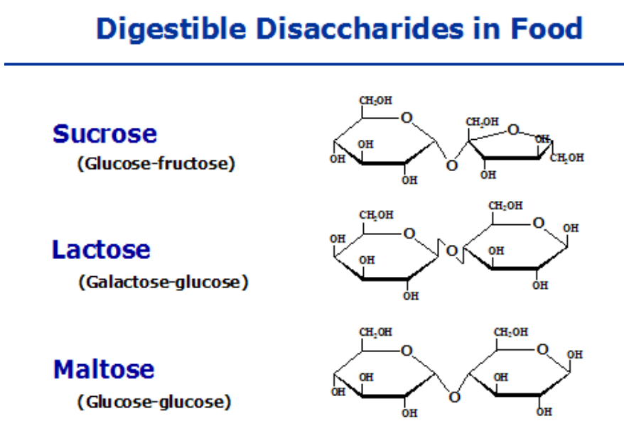
1.2 Energy From Food: Calories IO 2
A little "c" calorie is the amount of heat needed to raise the temperature of 1 g of water by 1°C. A kilocalorie (kcal) is the amount of heat needed to raise 1000 g (1 L) of water by 1°C — 1 kcal = 1000 calories. On food labels, energy is expressed as Calories (capital C), which is the same unit as kcal: 1000 calories = 1 kcal = 1 (food) Calorie.
| Nutrient | kcal per gram |
|---|---|
| Carbohydrate | 4 kcal/g |
| Protein | 4 kcal/g |
| Fat (lipid) | 9 kcal/g |
| Alcohol | 7 kcal/g |
To find the total calorie content of a food, multiply the grams of each macronutrient by its kcal/g factor and sum the results. Worked example — one grilled chicken sandwich:
| Nutrient | Grams | Factor | kcal |
|---|---|---|---|
| Carbohydrate | 46 g | × 4 | 184 kcal |
| Fat | 14 g | × 9 | 126 kcal |
| Protein | 45 g | × 4 | 180 kcal |
| Alcohol | 0 g | × 7 | 0 kcal |
| Total | 490 kcal | ||
1.3 The Metric System & Calculating Your Needs IO 3
Because food labels, drug dosing, and nutrient recommendations are all expressed in metric units, fluency with basic metric conversions is a prerequisite for calculating a patient's calorie and macronutrient needs.
| Conversion | Value |
|---|---|
| 1 gram (g) | ≈ 28 g to the ounce (weight); 1000 milligrams (mg); 1,000,000 micrograms (mcg) |
| 4 grams of sugar | ≈ 1 teaspoon |
| 6 grams of salt | ≈ 1 teaspoon |
| 1 pound (lb) | 454 grams |
| 1 kilogram (kg) | 1000 g = 2.2 lb (divide lb by 2.2 to get kg) |
| 1 liter (L) | 1000 milliliters (mL) |
| 1 teaspoon | ≈ 5 mL |
| 1 cup | ≈ 240 mL |
| 1 quart (4 cups) | ≈ 0.946 L (almost 1 L) |
Putting it together — a worked calorie-needs example: a 154 lb patient converts to 154 ÷ 2.2 = 70 kg. If a target intake is, say, 30 kcal/kg/day, total daily needs would be 70 × 30 = 2100 kcal. From there, the Food and Nutrition Board's macronutrient distribution ranges (45–65% of kcal from carbohydrate, 10–35% from protein, 20–35% from fat — see Section 1.5) can be applied to that total to set gram targets for each macronutrient, then converted back to grams using the kcal/g factors from Section 1.2 (divide the kcal allotment by 4, 4, or 9 respectively).
1.4 Diet, Lifestyle & Leading Causes of Death IO 4
Per CDC data, several of the leading causes of death in North America — heart disease, stroke, type 2 diabetes, and certain cancers — have diet and lifestyle as major modifiable contributors. This is the core rationale for nutrition counseling as a preventive-medicine tool: excess calorie intake, poor macronutrient balance, and sedentary behavior drive the obesity epidemic, which in turn drives much of this chronic-disease burden.
Overweight & Obesity
- Overweight: a ratio of weight to height that is moderately higher than what is associated with optimal health.
- Obesity: an excessive amount of body fat relative to lean tissue.
| BMI (kg/m²) | Classification |
|---|---|
| 18.5–24.9 | Healthy body weight |
| 25–29.9 | Overweight |
| 30–34.9 | Class 1 obesity |
| 35–39.9 | Class 2 obesity |
| 40+ | Class 3 obesity |
Per the lecture's cited 2018 CDC statistics: about 26% of the U.S. population is at a normal weight, 72.5% is overweight (BMI ≥ 25, a category that includes everyone with obesity), and within that group, 41% meets criteria for obesity (BMI ≥ 30).
Consequences of obesity include chronic disease — cardiovascular disease, hypertension, diabetes, kidney failure, arthritis/joint failure, and some cancers — plus a substantial economic burden from lost work productivity.
1.5 The Standard American Diet: Assessing & Improving Our Eating Pattern IO 5
National diet surveys (NHANES) show the overall macronutrient distribution of the American diet is, on average, within the Food and Nutrition Board's recommended ranges — but sits at the edges in ways that matter clinically:
| Macronutrient | Actual U.S. average (NHANES 2018) | Food & Nutrition Board advised range |
|---|---|---|
| Protein | 15.8% of kcal | 10%–35% |
| Carbohydrate | 46.7% of kcal | 45%–65% |
| Fat | 35.8% of kcal | 20%–35% |
| Alcohol | 3% of kcal | — |
Fat intake averages slightly above the top of its recommended range, while carbohydrate and protein sit near the low end of theirs — consistent with the improvements the lecture calls for: choose plant sources of protein rather than animal proteins, choose plant oils rather than solid fats, choose more nutrient-dense foods, balance calorie intake with calorie needs, practice moderation in sugar, salt, and alcohol, and increase the quantity and variety of fruits and vegetables.
Nutrient Density vs. Energy Density
A food is nutrient-dense when it provides a large amount of a nutrient for a relatively small number of calories compared with other foods — i.e., it delivers important nutrients without excess fat, sugar, or sodium. Comparing nutrient density is an easy way to estimate a food's relative nutritional quality.
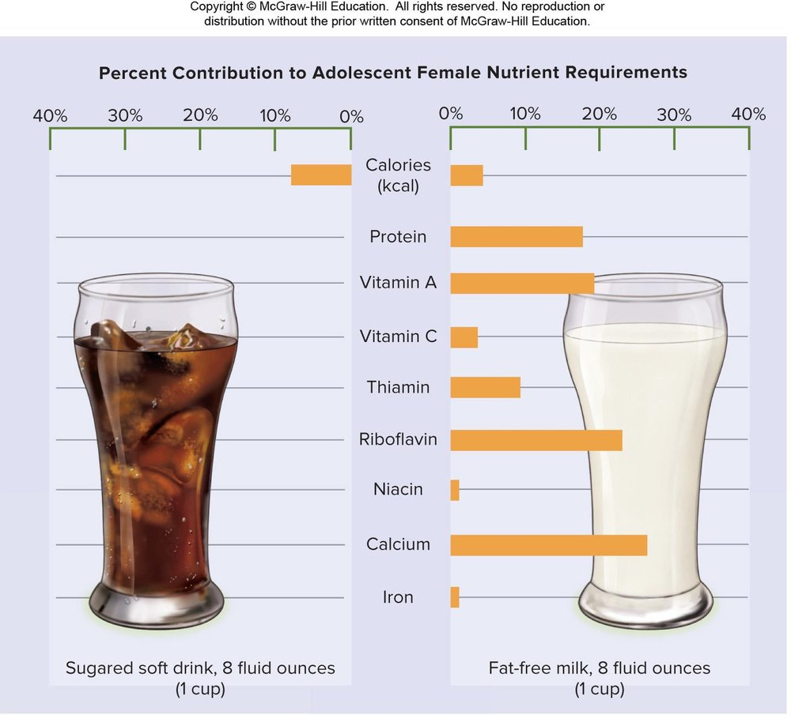
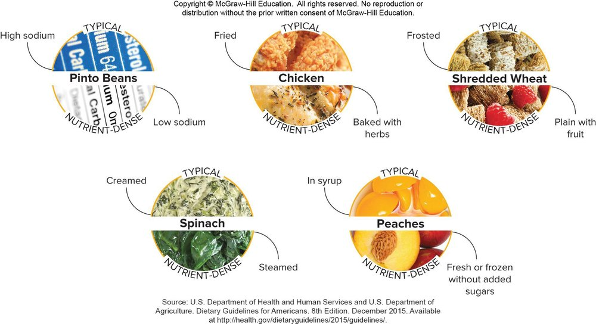
Energy density is a related but distinct concept: it compares a food's calorie (kcal) content with its weight, not its nutrient content. A food can be low in energy density (few calories per gram, e.g., because of high water or fiber content) yet still be very nutrient-dense — vegetable soup and fat-free milk are examples the lecture highlights.
| Very low energy density (<0.6 kcal/g) | Low energy density (0.6–1.5 kcal/g) | Medium energy density (1.5–4 kcal/g) | High energy density (>4 kcal/g) |
|---|---|---|---|
| Tomatoes | Oatmeal | Eggs | Bacon |
| Broccoli | Plain baked potato | White bread | Chocolate chip cookies |
| Salsa | Bananas | Bagels | Tortilla chips |
| Fat-free milk | Fat-free yogurt | Cream cheese | Fried food |
| Vegetable soup | Spaghetti noodles | Rice cakes | Butter or margarine |
1.6 Dietary Guidelines, MyPlate & the Food Label IO 5
The Dietary Guidelines for Americans, published every 5 years by the USDA and DHHS, translate nutrition science into food-based guidance for the public and provide the framework health professionals use to design healthy dietary patterns. Four key principles: (1) follow a healthy dietary pattern at every life stage, (2) customize nutrient-dense choices to personal preference, culture, and budget, (3) focus on meeting food-group needs with nutrient-dense foods while staying within calorie limits, and (4) limit foods and beverages higher in added sugars, saturated fat, sodium, and alcohol.
Food components to include
- Variety of vegetables, both starchy and non-starchy
- Fruits, especially whole fruits
- Grains — at least half whole grains
- Fat-free or low-fat dairy (milk, yogurt, cheese, and/or fortified soy beverages)
- A variety of protein foods: seafood, lean meats and poultry, eggs, legumes, nuts, seeds, and soy
- Mono- and polyunsaturated oils
Food components to limit
- Saturated fats (<10% of kcal)
- Trans fats
- Added sugars (<10% of kcal)
- Sodium (<2,300 mg/day)
- Alcohol, if consumed at all — up to 1 drink/day for women, up to 2 drinks/day for men, and only by adults of legal drinking age
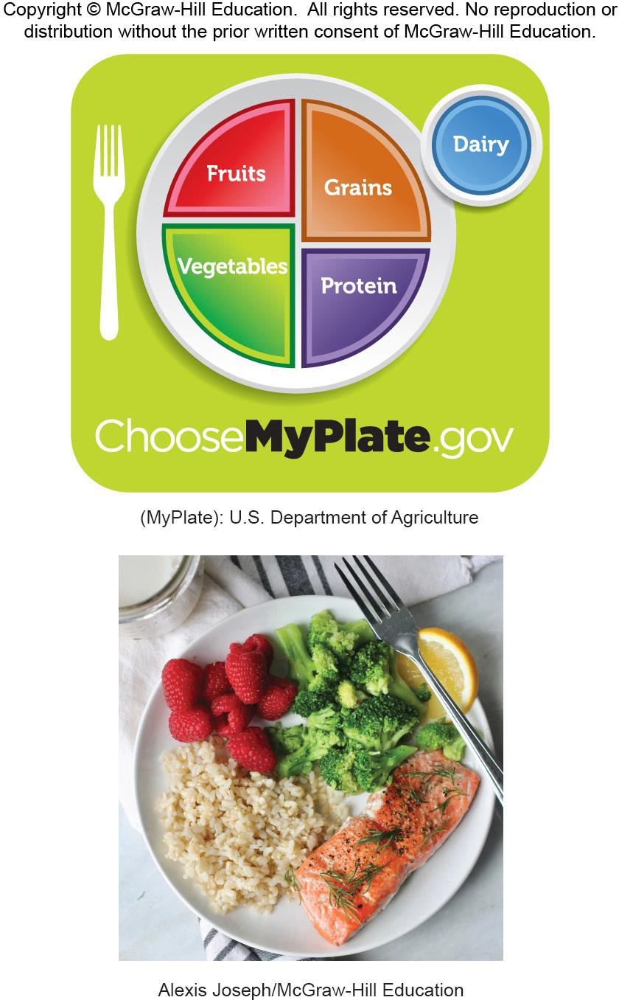
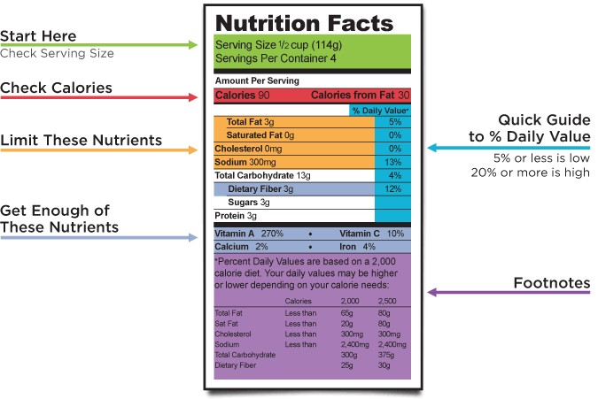
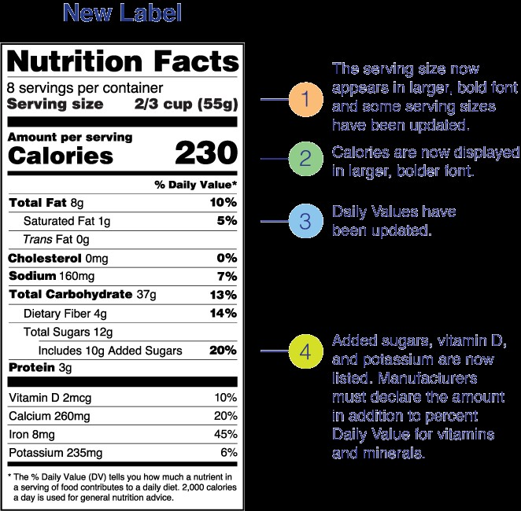
1.7 What Shapes Our Food Choices IO 6
Food choice is driven by more than nutrition knowledge. The lecture ranks flavor, texture, and appearance as the #1 influence, followed by early influences, eating habits/food availability/convenience, marketing and advertising, restaurant dining, time and cost, sustainability, and — often last — nutrition itself. In short: physiological processes (hunger, taste preference), meal size and composition, early childhood experiences, ethnic and cultural customs, health concerns, advertising, social class, and economics all shape what ends up on the plate, which is why nutrition counseling has to work with those drivers rather than against them.
Variety & Functional Foods
No single food meets all nutrient needs, so patients should be counseled to choose foods across all five food groups and "eat the colors of the rainbow" among fruits and vegetables. Functional foods provide health benefits beyond their traditional nutrient content — phytochemicals (e.g., lycopene in tomatoes) are one example. Practical ways to boost phytochemical intake include using vegetables in main and side dishes, choosing romaine over iceberg lettuce, using salsa instead of creamy dips, choosing whole-grain products, and incorporating soy foods (tofu, soy milk, edamame).
Your Role as the Health Care Provider
As a PA, this means having a working understanding of medical nutrition, recognizing the implications of both under- and over-nutrition, incorporating nutritional assessment into patient evaluation, and being able to give simple, clear nutritional recommendations. When a patient's needs exceed what a brief visit can address, know when to refer: a Registered Dietitian (RD) or Registered Dietitian Nutritionist (RDN) has completed a four-year degree plus (in most cases) a post-graduate internship, and is certified by the Academy of Nutrition and Dietetics through a national exam.
2 · Macronutrients, Micronutrients, and Trace Minerals in Human Health
Instructional Objectives
- Compare the Food and Nutrition Board RDA recommendations for carbohydrates, protein, and lipids.
- Discuss carbohydrate metabolism, including glycemic index.
- Summarize the beneficial effects of fiber on the body.
- Differentiate among mono-saturated, polyunsaturated, and saturated fatty acids and their role in nutritional health.
- Discuss the implications of various fats, including omega-3 fatty acids, with respect to cardiovascular disease.
- Describe positive protein balance, negative protein balance, and protein equilibrium as it applies to nutritional health.
- Describe how protein-calorie malnutrition can lead to disease in the body.
- Discuss vegetarian diet plans that meet protein requirements.
- Describe the major functions of vitamins.
- Identify food sources for each vitamin.
- Classify which minerals are major and trace.
- Describe the food sources of minerals.
- Describe the role of minerals that aid in maintaining overall health.
- Describe safety concerns about water supply systems.
2.1 Carbohydrates: RDA & Metabolism IO 1 IO 2
Carbohydrates provide 4 kcal/g and are the fuel for every cell in the body — especially the brain, nervous system, and red blood cells, which strongly prefer glucose. Circulating carbohydrate exists as blood glucose or as glycogen, a highly branched glucose polymer synthesized in the liver and stored in liver and muscle for quick availability.
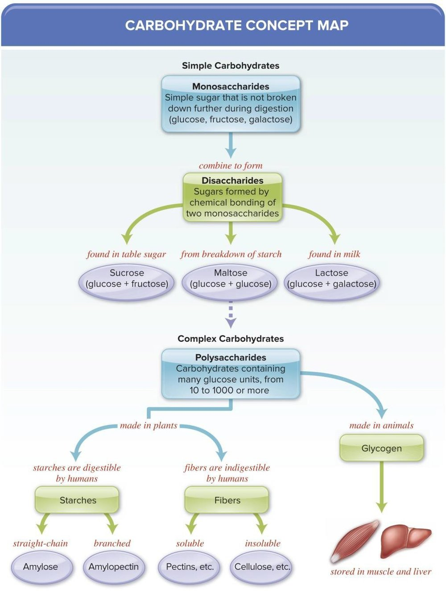
RDA Comparison — Carbohydrate, Protein, Lipid IO 1
| Macronutrient | Food & Nutrition Board acceptable range (% of total kcal) | Other key figures |
|---|---|---|
| Carbohydrate | 45%–65% | RDA is 130 g/day (adults); average U.S. intake is 180–330 g/day. |
| Protein | 10%–35% | Estimated need ≈ 0.8 g/kg healthy body weight; upper limit 35% of kcal (UL 170 g). |
| Lipid (fat) | 20%–35% | No formal RDA for total fat; Dietary Guidelines suggest 44–78 g/day at 2000 kcal. |
Regulating Blood Glucose & the Glycemic Response IO 2
Poor glucose control produces either hyperglycemia (fasting blood glucose >125 mg/dL) or hypoglycemia (<40–50 mg/dL in a nondiabetic). Glucose is the body's preferred fuel; red blood cells can only use glucose, while the brain prefers glucose but can use ketone bodies (partial fat-breakdown products) if glucose is scarce.
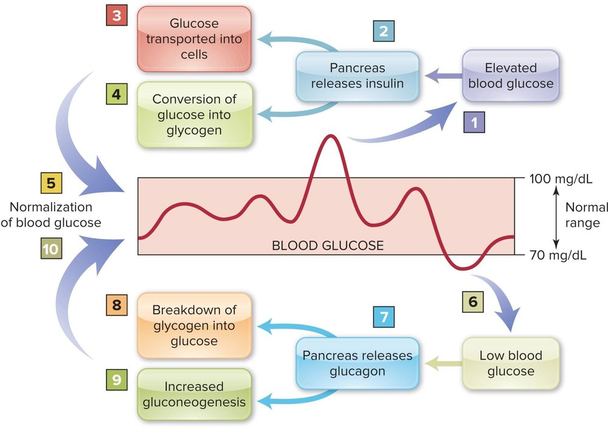
The glycemic index ranks how quickly a carbohydrate-containing food raises blood glucose relative to a reference (pure glucose or white bread). Foods that are rapidly digested and absorbed (refined starches, sugary drinks) produce a fast, high glycemic response; foods higher in fiber, fat, or protein blunt and slow that rise. Diet quality declines when added-sugar intake is excessive: the Food and Nutrition Board's upper limit is 25% of kcal from added sugars, while the American Heart Association sets a tighter limit — about 100 kcal/day (24 g, ~6 tsp) of added sugar for women and 150 kcal/day (36 g, ~9 tsp) for men.
2.2 Fiber IO 3
Dietary fiber is nondigestible carbohydrate. Digestible starch itself comes in two forms — amylopectin (highly branched, ~80% of starch in potatoes, corn, beans, white bread, and short-grain rice) and amylose (long straight chains, ~20% of starch in vegetables, legumes, bread, pasta, and rice) — versus fiber, which human digestive enzymes cannot break down at all.
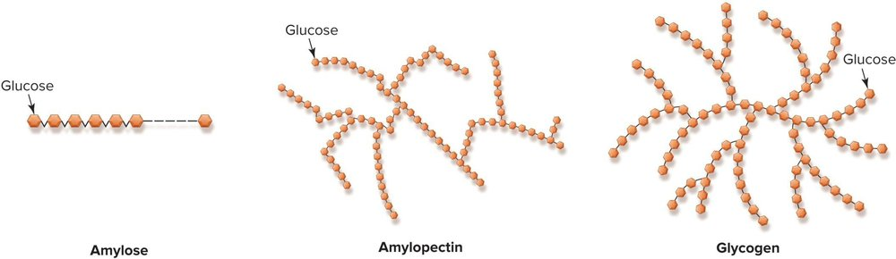
| Fiber type | Examples | Key property |
|---|---|---|
| Insoluble (nonfermentable) | Lignin (noncarbohydrate); cellulose & hemicelluloses — whole grains, wheat bran, woody vegetable stems, fruit skins, nuts | Increases fecal bulk; decreases intestinal transit time |
| Soluble / viscous (fermentable) | Gum, pectin, carrageenan, mucilage — beans, oats, some fruits/vegetables, rice bran, psyllium | Readily fermented by colonic bacteria; reduces cholesterol absorption |
| Functional fiber | Resistant starch, polydextrose, indigestible dextrins, inulin | Isolated nondigestible carbohydrates added to manufactured foods |
Benefits of Fiber
- Encourages regularity and lowers colon-cancer risk
- Improves the gut microbiome
- Creates satiety and slows the release of glucose into the bloodstream (blunts glycemic response)
- Higher-fiber foods are typically more nutrient-dense
- Soluble fiber reduces cholesterol absorption in the gut and reduces hepatic cholesterol synthesis (oats/barley, chia seeds, kidney beans, apples/bananas/oranges are good sources)
Colonic bacteria ferment soluble fiber into short-chain fatty acids (absorbed) and gases (not harmful) — this fermentation is thought to promote colon health. Too little fiber (combined with too little water, or certain pain medications) causes constipation. Too much fiber (>60 g/day) requires extra fluid, may decrease absorption of some minerals, and can leave unmet energy needs in children.
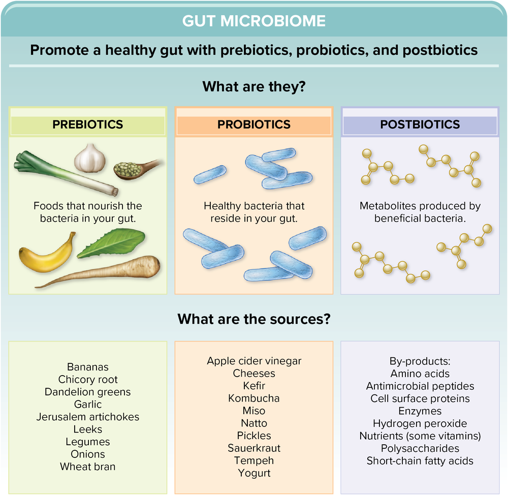
2.3 Carbohydrates in Foods, Sugar & Diabetes
Carbohydrate sources across the food groups: fruits provide natural sugar and fiber (choose whole/cut fruit over juice); vegetables and legumes/beans contribute carbohydrate plus protein and fiber; dairy provides carbohydrate as lactose; whole grains provide starch plus fiber, and functional foods may have fiber added back in.
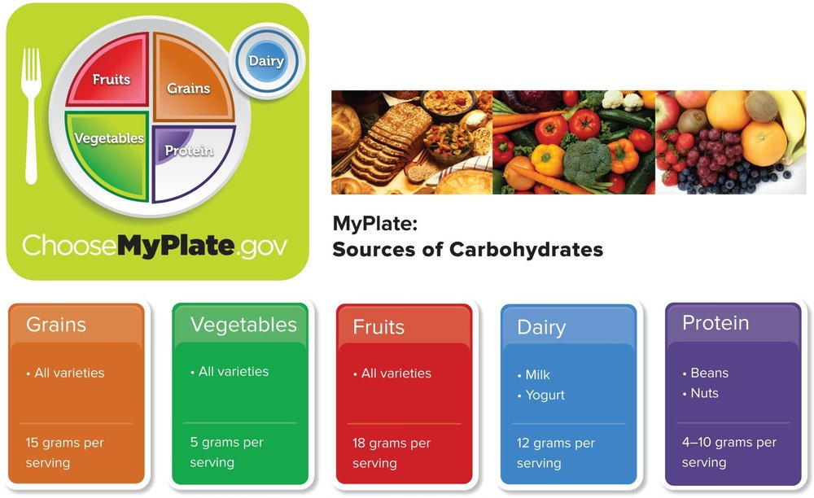
The 2020–2025 Dietary Guidelines recommend that at least half of all grains consumed be whole grains; check the ingredient list and fiber content on the label, since "wheat bread" is not necessarily whole grain.
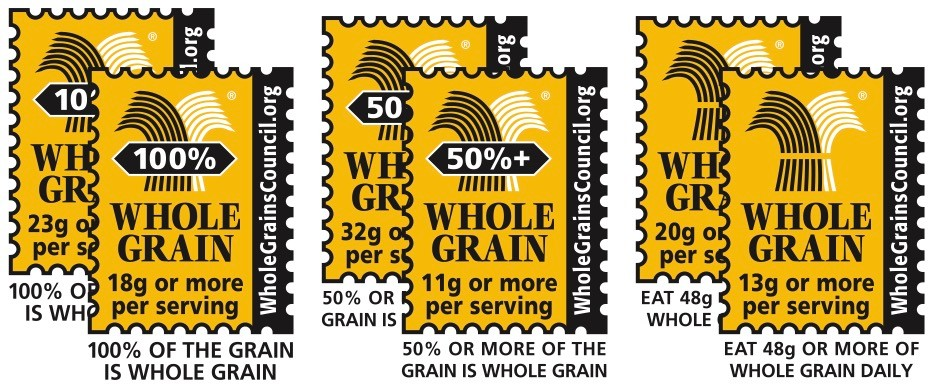
Lactose Maldigestion
Caused by reduced lactase enzyme activity: undigested lactose is not absorbed, causing gas, bloating, cramping, and discomfort. Primary lactose maldigestion is the normal physiologic decline in lactase beginning around age 3–5 and is present in roughly 25% of North American adults. Secondary lactose maldigestion is temporary, due to a specific cause such as diarrhea; severe, persistent cases are termed lactose intolerance. Yogurt, kefir, and hard cheeses (Manchego, Parmesan) are naturally lower in lactose and often better tolerated.
Sugar Alcohols & Alternative Sweeteners
Sugar alcohols (e.g., in gum, mints, candy, nutrition bars) provide ~2.6 kcal/g; they are incompletely absorbed, stay in the gut longer, and can cause diarrhea in large amounts. Nonnutritive alternative sweeteners yield little to no calories at typical intake; the FDA sets an Acceptable Daily Intake (ADI) for each, based on a 100-fold safety margin below the no-effect level in animal studies — they are considered safe in children, adults, and pregnancy, though some evidence suggests they may negatively affect the gut microbiome or increase insulin levels.
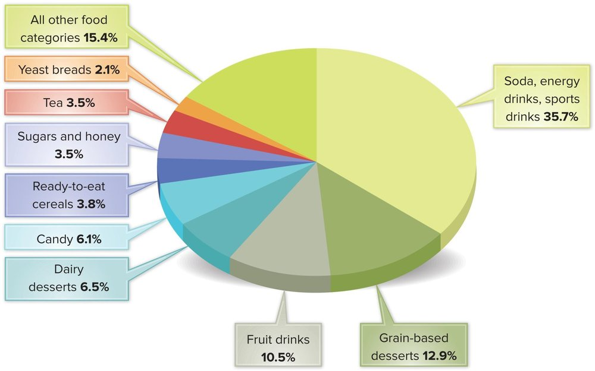
Diabetes Mellitus
| Type 1 Diabetes | Type 2 Diabetes | |
|---|---|---|
| Occurrence | 5%–10% of cases | 90%–95% of cases |
| Cause | Autoimmune destruction of the pancreas | Insulin resistance |
| Risk factors | Moderate genetic predisposition | Strong genetic predisposition; obesity & physical inactivity; ethnicity; metabolic syndrome/prediabetes |
| Characteristics | Distinct symptoms (thirst, hunger, urination); ketosis; weight loss | Mild/early symptoms (fatigue, nighttime urination); generally no ketosis |
| Treatment | Insulin, diet, exercise | Diet, exercise, oral glucose-lowering medications; insulin in advanced cases |
| Complications | Cardiovascular disease, kidney disease, nerve disease, blindness, infections (shared by both types) | |
| Monitoring | Blood glucose, urine ketones, HbA1c | Blood glucose, HbA1c |
Diagnostic tests: HbA1c (average blood sugar over ~3 months), Fasting Plasma Glucose (FPG), Oral Glucose Tolerance Test (OGTT — blood sugar before and 2 hours after a glucose drink), and Random Glucose Test (used in severe cases). Diabetic hypoglycemia occurs in insulin-using diabetics, typically 2–4 hours after a meal, with shakiness, sweating, palpitations, anxiety, hunger, and sometimes confusion — treat with 15 g of simple carbohydrate, a glucose tablet, or glucagon.
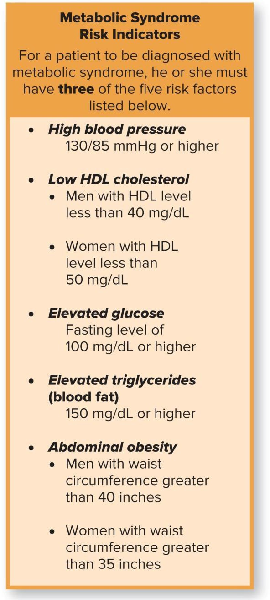
2.4 Lipids: Fatty Acid Types IO 4
Lipids provide 9 kcal/g — the most calorie-dense macronutrient — and share one defining property: they do not readily dissolve in water. Lipids should make up 20%–35% of an adult's total caloric intake. Major lipid types include triglycerides (the primary storage/dietary form), phospholipids, and sterols (e.g., cholesterol).
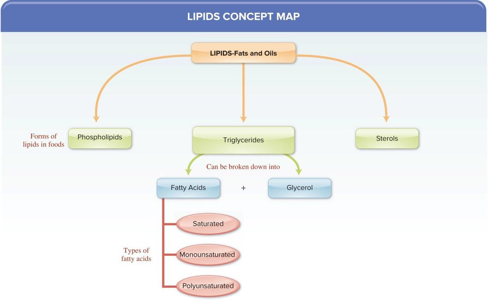
Triglycerides are the primary form of fat in both food and the body, made of three fatty acids bonded to a glycerol backbone. Fatty acids are classified by their degree of saturation:
| Type | Structure | Typical source | Room-temp state |
|---|---|---|---|
| Saturated | No double bonds — every carbon is "saturated" with hydrogen | Primarily animal fats | Solid |
| Monounsaturated | One double bond (e.g., oleic acid, an omega-9) | Plant oils (olive, canola) | Liquid |
| Polyunsaturated | More than one double bond (omega-3, omega-6) | Plant oils, fatty fish | Liquid |
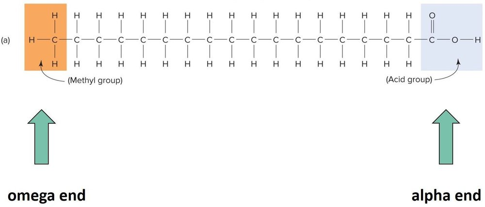
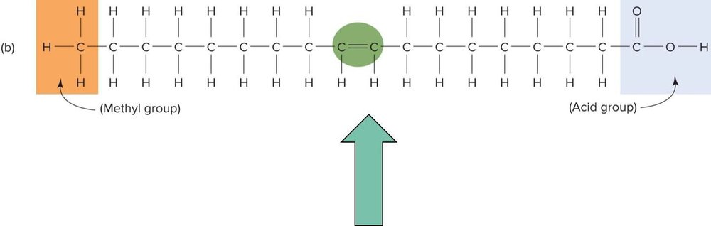
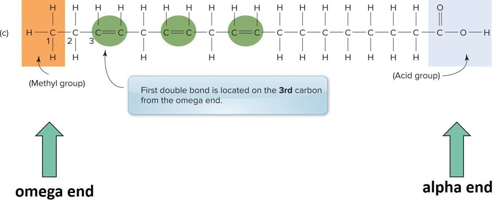
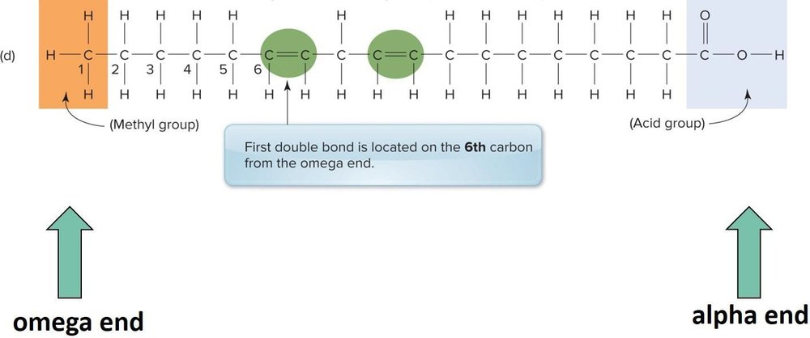
Essential Fatty Acids
Two families must be supplied by diet because the body cannot synthesize them: the omega-3 family (alpha-linolenic acid, a short-chain omega-3; and the long-chain marine omega-3s DHA and EPA) and the omega-6 family (linoleic acid). Omega-3 food sources include flax and flaxseed oil, chia, hemp, canola oil, and walnuts (alpha-linolenic acid) plus fatty fish — salmon, tuna, mackerel, lake trout (DHA/EPA); about 2 servings of fish per week is the general recommendation.
Hydrogenation & Manufactured Fats
Hydrogenation adds hydrogen across a double bond, converting a liquid oil into a firmer, more solid fat. Food manufacturers also use interesterified fat (an unsaturated fatty acid on a triglyceride is swapped for a saturated one, increasing shelf stability), tropical oils (palm, palm kernel, coconut — all considered saturated fats despite being plant-derived), and high-oleic plant oils (soybean, canola) engineered for a more stable shelf life.
2.5 Fats, Lipoproteins & Cardiovascular Disease IO 5
About 95% of dietary fat is absorbed. Short- and medium-chain fatty acids (<12 carbons) diffuse directly into the portal vein; long-chain fatty acids are re-formed into triglycerides and enter the lymphatic system.
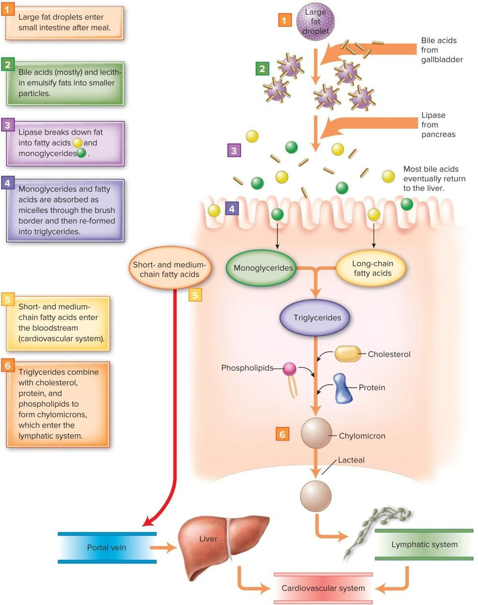
Because fat and water don't mix, the blood needs a special transport system: lipoproteins, spherical particles with a lipid core and an outer shell of protein, phospholipid, and cholesterol.
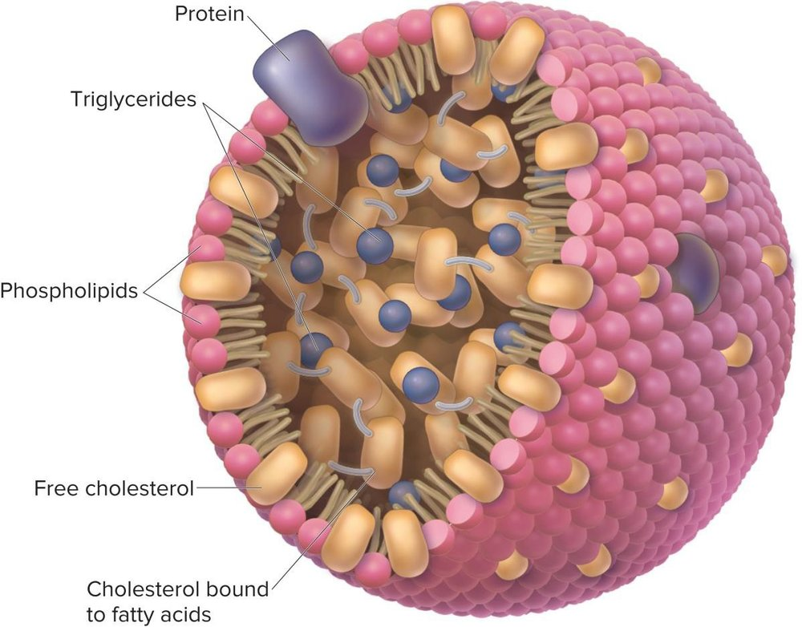
| Lipoprotein | Primary component | Key role |
|---|---|---|
| Chylomicron | Triglyceride | Carries dietary fat from the small intestine to cells |
| VLDL | Triglyceride | Carries lipids made/taken up by the liver to cells |
| LDL | Cholesterol | Carries cholesterol made by the liver (and other sources) to cells — the "bad" cholesterol carrier |
| HDL | Protein | Removes cholesterol from cells and carries it back to the liver for excretion — the "good" cholesterol carrier |
HDL is synthesized by the liver and intestine and has the highest proportion of protein of any lipoprotein (making it the most dense). It picks up cholesterol from dying cells and returns it to the liver, may block LDL oxidation, and reduces cardiovascular disease risk.
CVD Risk & Fat Recommendations IO 5
Cardiovascular disease is the leading cause of death in North America (~610,000 deaths/year; ~$108.9 billion/year in cost), encompassing myocardial infarction and cerebrovascular accident (stroke). Major risk factors: smoking, hypertension (>139/89), diabetes, total cholesterol >200 mg/dL, low HDL (<40 mg/dL), age (men >45, women >55), family history, triglycerides >200 mg/dL, obesity (especially central adiposity), insulin resistance, and inactivity.
There is no formal RDA for total fat, but the Dietary Guidelines recommend 20%–35% of calories from fat (44–78 g at 2000 kcal); the AHA recommends 20%–30% of kcal from fat with saturated fat limited to 7%–10%, plus 2 or more servings of fatty fish per week. There is no specific dietary cholesterol limit, since dietary cholesterol has a limited impact on blood cholesterol compared with saturated and trans fat intake. To minimize unhealthy fat intake, limit hydrogenated fats, deep-fried foods, high-fat baked goods, non-dairy creamers, and high-fat meats.
2.6 Protein: Balance, Functions & Malnutrition IO 6 IO 7
Protein provides 4 kcal/g and is built from 20 amino acids: 9 essential amino acids (must come from diet — histidine, isoleucine, leucine, lysine, methionine, phenylalanine, threonine, tryptophan, valine) and 11 nonessential amino acids (the body can synthesize them). Complete proteins contain ample amounts of all 9 essential amino acids and are readily digestible (most animal proteins, plus soy). Incomplete proteins are low in or lack one or more essential amino acids; combining two or more incomplete sources across a day (complementary proteins) covers the full essential amino acid profile — modern guidance no longer requires this combination within a single meal.
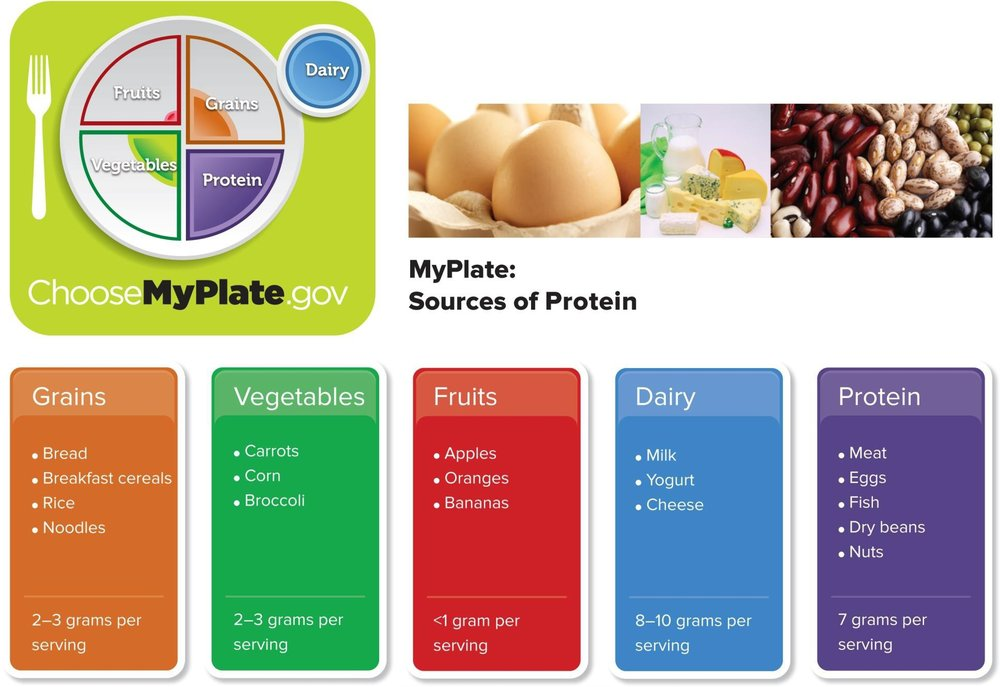
Protein Balance IO 6
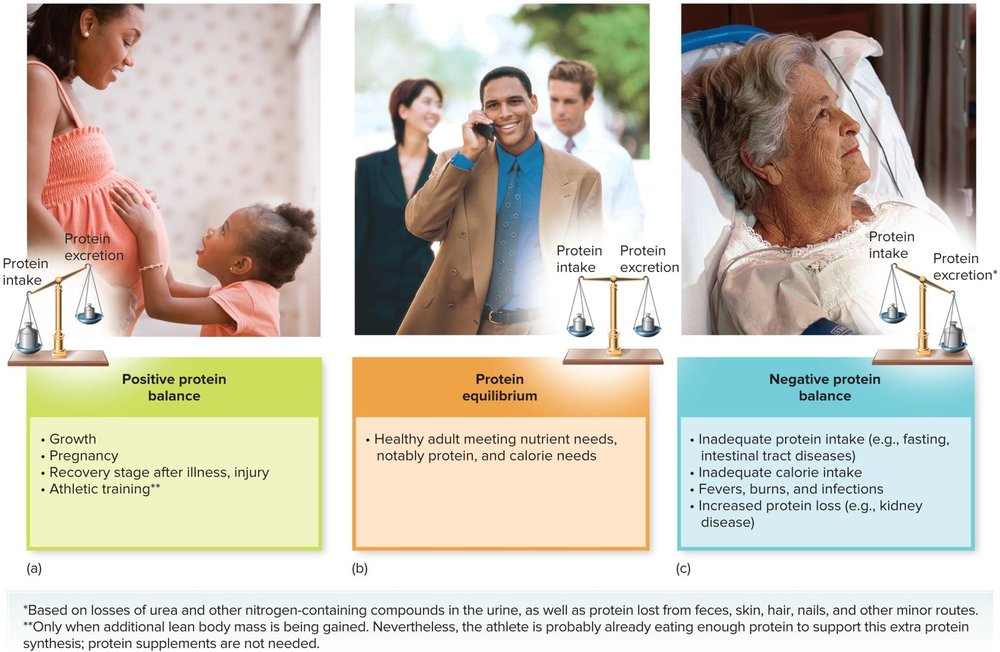
Protein functions in the body: maintaining fluid balance, acid-base balance, forming hormones (e.g., insulin, thyroid hormones) and enzymes, supporting immune function, providing energy (a nonpreferred source — the liver can make glucose from amino acids when carbohydrate is inadequate), and contributing to satiety (protein is a large molecule that takes longer to break down, promoting fullness).
- Fluid balance: plasma proteins are too large to leave the bloodstream, so they hold fluid in the vascular space by oncotic pressure. When protein intake is too low, fluid shifts into tissues, producing edema.
- Glucose formation: in starvation, muscle-tissue amino acids are converted to glucose, causing muscle wasting (which can itself worsen edema).
- Energy: the amino group is removed (increasing urea production) and the remaining carbon skeleton is metabolized for energy during prolonged exercise or aggressive weight loss.
RDA for protein is roughly 0.8 g/kg of healthy body weight (about 10%–15% of total calories), with higher needs for endurance athletes (up to 1.7 g/kg), the elderly (1–1.2 g/kg), and dialysis, cancer, or organ-transplant patients. Excess protein cannot be stored as protein; the Food and Nutrition Board sets an upper limit around 35% of kcal (UL 170 g).
Protein-Calorie Malnutrition IO 7
Protein-calorie malnutrition (PCM) is relatively rare in developed countries (seen in some alcoholics and elderly patients) but remains common in developing countries, where it stunts growth and increases infection risk.
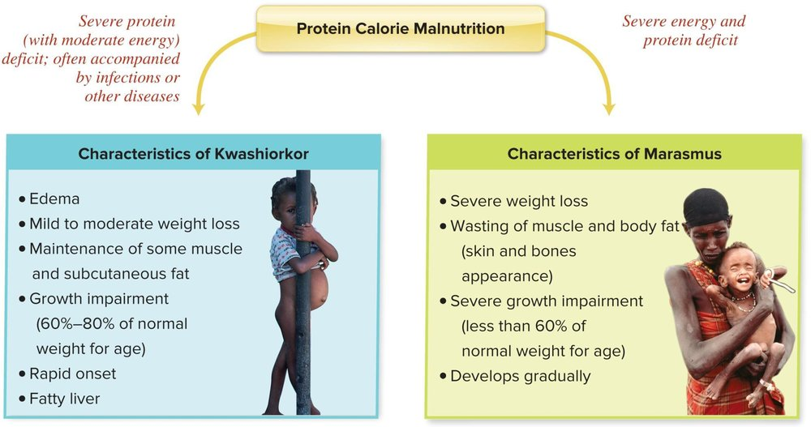
2.7 Vegetarian & Plant-Based Diets IO 8
People choose vegetarian diets for ethical, religious, economic, or health reasons. A well-planned vegetarian diet can meet all nutritional needs while naturally limiting saturated fat and cholesterol and encouraging high intake of complex carbohydrates, vitamins A/E/C and carotenoids, magnesium, and fiber. Vegetarian and especially vegan diets have a favorable cardiovascular profile: no dietary cholesterol (vegan), little to no trans or saturated fat, ample mono- and polyunsaturated fat, and a good supply of fiber, vitamins, minerals, and phytochemicals.
| Pattern | Includes |
|---|---|
| Vegan | Only plant-based foods |
| Fruitarian | Fruits, nuts, honey, and vegetable oils |
| Lacto-vegetarian | Plant foods + dairy |
| Lacto-ovo-vegetarian | Plant foods + dairy + eggs |
| Pescatarian | Plant foods + dairy + eggs + fish |
The most restrictive pattern — vegan — carries the greatest nutrient-deficiency risk and needs the most deliberate planning around vitamin B12, vitamin D, calcium, iron, zinc, and omega-3 fatty acids (all nutrients that are naturally concentrated in animal foods).
| Food group | Lacto-vegetarian servings | Vegan servings | Key nutrients supplied |
|---|---|---|---|
| Grains | 6–11 | 8–11 | Protein, thiamin, niacin, folate, vitamin E, zinc, magnesium, iron, fiber |
| Beans/legumes | 2–3 | 3 | Protein, vitamin B6, zinc, magnesium, fiber |
| Nuts, seeds | 2–3 | 3 | Protein, vitamin E, magnesium |
| Vegetables | 3–5 | 4–6 | Vitamin A, vitamin C, folate, vitamin K, potassium, magnesium |
| Fruits | 2–4 | 4 | Vitamin A, vitamin C, folate |
| Dairy / fortified soy milk | 3 | 3 (fortified soy milk) | Protein, riboflavin, vitamin D, vitamin B12, calcium |
Legumes, beans, peas, peanuts, nuts, seeds, and whole grains all contribute protein, vitamins, and fiber, plus phytochemicals — practical swaps include a veggie burger, seeds/nuts on salad, edamame, peanut butter on whole-wheat bagel, beans instead of ground meat in tacos, and calcium-fortified soy milk in place of dairy milk. Soy products (soy milk, tofu, soy bread, whole soybeans) are notable among plant sources because they supply all 9 essential amino acids on their own.
2.8 Vitamins IO 9 IO 10
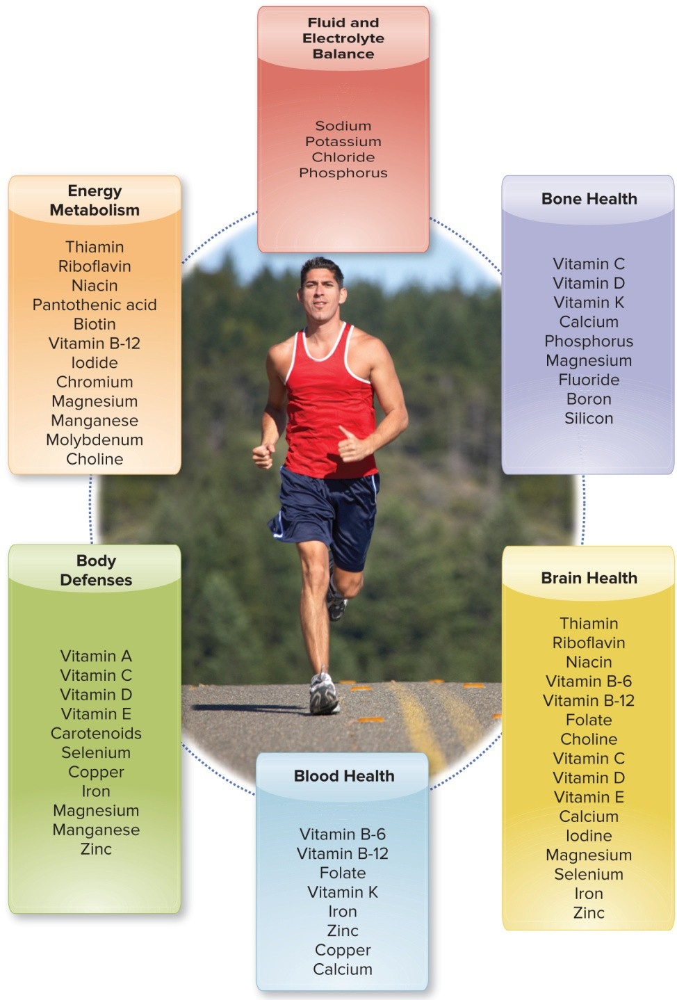
Vitamins are carbon-containing (organic) substances the body needs in small amounts but generally cannot synthesize enough of on its own. Deficiency causes a decline in function that resolves once the vitamin is resupplied — the essential-nutrient criteria from Section 1.1 applied to a micronutrient. Megadoses (well above the Upper Level) should be avoided.
Fat-Soluble Vitamins IO 9 IO 10
| Vitamin | Major function(s) |
|---|---|
| A | Normal vision; gene expression; growth, development, reproduction; embryonic development; immune function; cancer prevention |
| D (calciferol — D2/ergocalciferol, D3/cholecalciferol) | Maintains serum calcium and phosphorus; bone health; gene expression and cell growth |
| E | Antioxidant; prevents breakdown of vitamin A and unsaturated fatty acids |
| K | Coenzyme in synthesis of blood-clotting proteins and bone metabolism |
Water-Soluble Vitamins IO 9 IO 10
| Vitamin | Major function(s) |
|---|---|
| Thiamin (B1) | Coenzyme in carbohydrate & branched-chain amino acid metabolism |
| Riboflavin (B2) | Coenzyme in numerous redox (oxidation-reduction) reactions |
| Niacin (B3) | Coenzyme in energy-metabolism redox reactions |
| Pantothenic acid (B5) | Coenzyme in fatty acid metabolism |
| Vitamin B6 (pyridoxine) | Coenzyme for amino-acid metabolism, neurotransmitter synthesis, red blood cell synthesis |
| Biotin (B7) | Coenzyme in synthesis of fat, glycogen, and amino acids |
| Folate (B9) | Coenzyme in nucleic- and amino-acid metabolism; red blood cell synthesis |
| Vitamin B12 (cobalamin) | Coenzyme in nucleic-acid metabolism; red blood cell synthesis |
| Vitamin C (ascorbic acid) | Connective tissue synthesis; hormone/neurotransmitter synthesis; antioxidant; immune function; improves nonheme iron absorption |
| Choline | Neurotransmitter and phospholipid synthesis (essential, but classified as neither a vitamin nor a mineral) |
Absorption & storage: water-soluble vitamins are absorbed primarily in the small intestine, have relatively high bioavailability, and travel via the portal vein to the liver and body tissues. Fat-soluble vitamins are absorbed together with dietary fat — anything that interferes with fat absorption impairs their absorption too. Bioavailability is the degree to which an ingested nutrient is digested, absorbed, and made available for the body to use.
Toxicity: fat-soluble vitamins A, D, and E are not readily excreted and can accumulate — vitamin A toxicity is the most frequently observed. Water-soluble vitamin excess is generally excreted in urine, with the notable exception of B6 and B12, which can be stored in the liver. Toxicity most often comes from supplements, not food, which is why megadosing should be avoided.
Preserving vitamins in food: vitamin content peaks at ripeness; freezing (often after blanching) helps retain nutrients; water-soluble vitamins are especially vulnerable to destruction by heat, light, air exposure, cooking in water, and alkalinity.
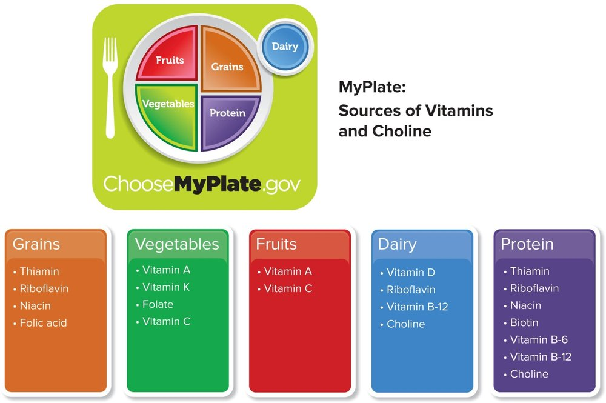
2.9 Minerals IO 11 IO 12 IO 13
Minerals are inorganic (no carbon) and, unlike vitamins, are not destroyed by cooking. They are classified by the quantity the body contains/needs — major minerals (needed in larger amounts) versus trace minerals (needed in very small amounts) — not by importance; a trace mineral deficiency can be just as clinically significant as a major mineral deficiency.
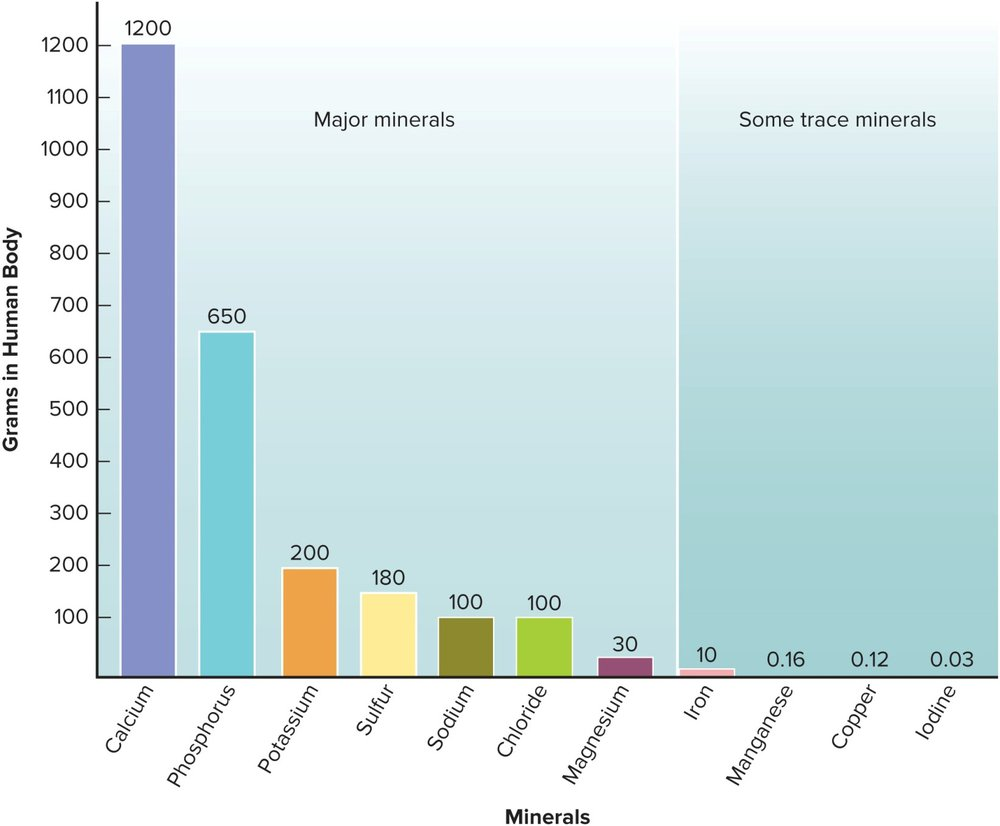
| Major mineral | Key function(s) |
|---|---|
| Calcium | Blood clotting; muscle contraction; nerve transmission; bone and tooth formation |
| Phosphorus | Maintains pH; storage and transfer of energy; nucleotide synthesis |
| Magnesium | Cofactor for enzyme systems and vitamin D activation; reduces tooth decay |
| Sulfur | Part of vitamins and amino acids; aids drug detoxification; acid-base balance |
| Sodium, Potassium, Chloride | Fluid and electrolyte balance (see Section 2.10) |
| Trace mineral | Key function(s) |
|---|---|
| Iron | Component of hemoglobin and numerous enzymes; immune function; cognitive development |
| Zinc | Component of multiple enzymes/proteins; gene expression; protein metabolism; wound healing and growth |
| Selenium | Defense against oxidative stress; thyroid hormone regulation; redox status of vitamin C and other molecules |
| Iodine | Component of thyroid hormones |
| Copper | Component of enzymes in iron metabolism; collagen synthesis |
| Fluoride | Inhibits initiation/progression of dental caries; stimulates new bone formation |
| Chromium | Helps maintain normal blood glucose levels |
| Manganese | Bone formation; cofactor for amino acid, cholesterol, and carbohydrate metabolism enzymes |
| Molybdenum | Cofactor for enzymes catabolizing sulfur amino acids, purines, and pyridines |
Absorption/bioavailability of minerals is affected by age, gender, genetics, nutritional status, overall diet, prescription drugs, and the fiber content of the diet. Toxicity is mostly a supplement problem, not a food problem — avoid intakes above 100% of the Daily Value from supplements, watch for harmful drug interactions, look for a USP (United States Pharmacopeial) seal on the label for quality assurance, and take mineral supplements with or just after a meal to improve absorption. Minerals are also lost from plant foods during processing — refined grains lose vitamin E, B vitamins, and trace minerals; enrichment adds back iron and some B vitamins, but not selenium, copper, or zinc.
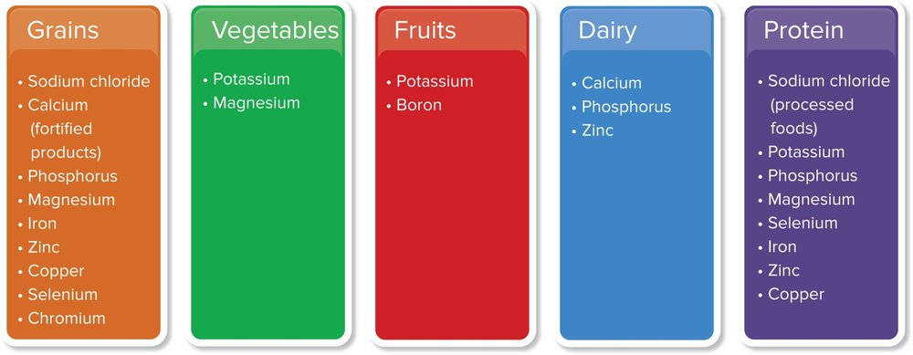
Minerals & Overall Health IO 13
- Building bones: vitamin D, vitamin K, calcium, phosphorus, magnesium, and fluoride — bone is living, dynamic tissue that is constantly remodeled.
- Blood health: vitamin K and calcium for clotting; iron, copper, folate, vitamin B6, and vitamin B12 for healthy blood cell production.
- Immune defense: vitamins A, D, E, some B vitamins, and vitamin C, plus chromium, copper, selenium, iron, and zinc.
- Antioxidant defense: vitamin E, vitamin C, carotenoids, and selenium protect tissue from oxidative damage.
Achieving a phytochemical-rich diet is estimated to require at least 5, and ideally 8–9, servings of fruits and vegetables per day — the average American diet provides only about 3,000–5,000 ORAC (oxygen radical absorbance capacity) units of antioxidant capacity versus a target closer to 12,000 units.
2.10 Water & Electrolyte Balance IO 14
Water is the most abundant molecule in the body, comprising 50%–70% of body weight (muscle is ~73% water; adipose tissue only 10%–20%; bone ~20%; very lean athletes can be up to 70% body water). The body cannot store water, so intake must be continuous.
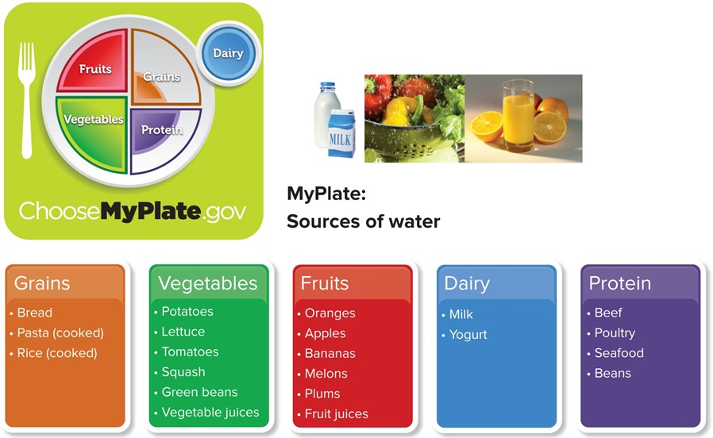
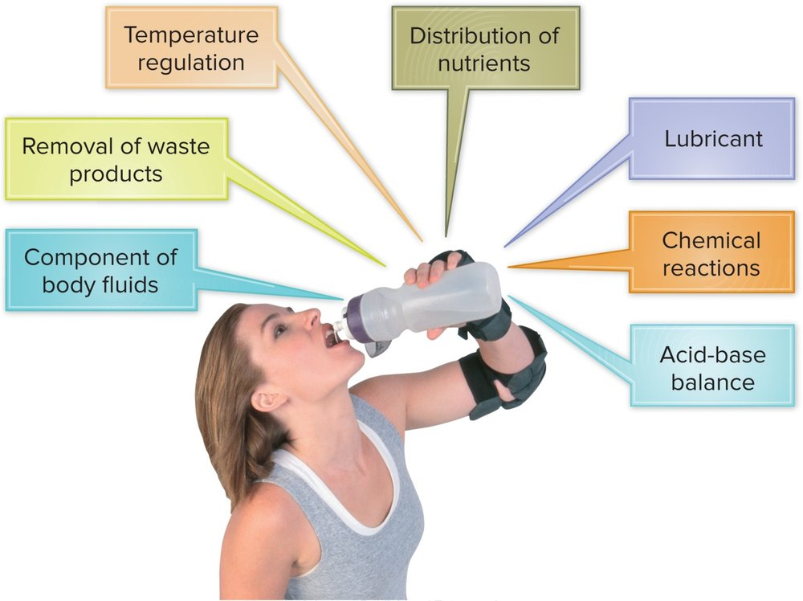
Hydration & Fluid Needs
General fluid targets are about 2.2 L/day (9 cups, 72 oz) for women and 3 L/day (13 cups, 104 oz) for men. Typical urine output is about 1 L/day; output below 500 mL (2 cups) signals dehydration (concentrated urine, increased renal workload).
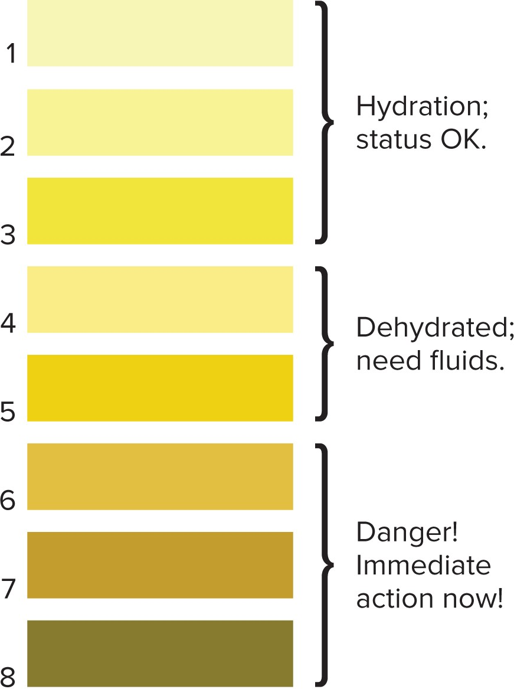
Thirst is controlled by the hypothalamus — by the time you feel thirsty, you're already mildly dehydrated. Thirst sensation can lag behind actual fluid needs during exercise or illness; infants and children need close monitoring (especially with vomiting/diarrhea), and hypothalamic sensitivity to thirst declines with age, raising dehydration risk in the elderly. Athletes should consume about 2–3 cups (16–24 oz) of fluid per pound lost during exercise.
Overhydration occurs when water intake exceeds the kidneys' processing capacity, diluting blood sodium. Severe overhydration causes water intoxication and hyponatremia (dangerously low blood sodium), with swelling of the brain and nerves and fluid in the lungs — a potentially fatal condition.
Water Supply Safety IO 14
Hard water (about 89% of U.S. homes) contains high levels of calcium and magnesium and doesn't lather soap well; soft water contains higher sodium and produces cleaner-feeling laundry — a relevant counseling point for patients on a sodium-restricted diet with a home water softener. For bottled/reusable water bottles: stainless steel is preferred; if using plastic, look for recycling codes 2 or 4, avoid codes 3 or 7 unless labeled "BPA free," discard scratched or cracked bottles, and never store water in a hot garage or car (heat promotes leaching of plastic compounds).
Sodium, Potassium & Chloride
| Electrolyte | Adequate intake / DV | Typical American intake | Deficiency risk groups / symptoms |
|---|---|---|---|
| Sodium | 1500 mg/day (ages 9–50); DV & UL both 2,300 mg/day; ≤1,500 mg/day to lower blood pressure | 2,300–4,700 mg/day (exceeds needs; ~77% comes from salt added during food manufacturing) | Low-sodium diets, excessive sweating (athletes), persistent vomiting/diarrhea → muscle cramps, nausea/vomiting, dizziness, shock, coma |
| Potassium | AI & DV both 4,700 mg/day | 2,000–3,000 mg/day (below target) | Chronic diarrhea, vomiting, laxative/alcohol abuse, eating disorders, very-low-calorie diets → loss of appetite, muscle cramps, confusion, constipation, irregular heartbeat. No UL set — toxicity from food alone is rare with healthy kidneys, but impaired kidney function allows dangerous buildup that can inhibit heart function. |
| Chloride | Paired with sodium intake (table salt = 40% sodium, 60% chloride by weight; 1 tsp salt ≈ 2,300 mg sodium) | — | Primary negatively-charged extracellular ion; forms stomach acid (HCl); supports immune response and nerve function |
High-sodium foods: packaged, processed, restaurant, fast, canned, and frozen prepared foods. Low-sodium foods: fresh fruits and vegetables, whole grains, and unprocessed meats without sauces.
Minerals & Hypertension
About 1 in 5 North Americans has hypertension, rising to roughly 1 in 2 among those over 65. The DASH diet (Dietary Approach to Stop Hypertension) is high in calcium, potassium, and magnesium; low in fat and sodium; very high in fruits and vegetables (naturally low-sodium, high-potassium); and rich in low-fat dairy.
| Intervention | Approximate systolic BP reduction |
|---|---|
| Lose excess weight (per 20 lb, if BMI >25) | 5–20 points |
| Follow a DASH diet | 8–14 points |
| Exercise daily (30 min aerobic activity) | 4–9 points |
| Limit sodium (≤2,400 mg/day, ideally ≤1,500 mg/day) | 2–8 points |
| Limit alcohol (≤2 drinks/day men, ≤1 drink/day women) | 2–4 points |
3 · Special Topics in Nutrition
Cameron Munn Ortiz, PA-C, RDN
Instructional Objectives
- Describe malnutrition and its implications for inpatients.
- Compare and contrast enteral and parenteral nutrition therapy.
- List appropriate indications for parenteral and enteral nutrition in adult patients.
- Describe refeeding syndrome.
- Identify the importance of nutrition in the management of common medical conditions.
3.1 Malnutrition: Definitions & Diagnosis IO 1
Malnutrition is an acute, subacute, or chronic nutrition state in which varying degrees of over- or under-nutrition, with or without inflammation, lead to a change in body composition and diminished function. Clinically, adult malnutrition is classified into three etiology-based diagnoses: starvation-related (a healthy person simply not eating — "simple starvation"), chronic disease-related, and acute disease- or injury-related malnutrition ("stress starvation," where inadequate intake is compounded by the metabolic response to trauma, sepsis, or critical illness).
Malnutrition is common and costly: an estimated 20%–50% of hospitalized US adults are malnourished, and 10%–65% experience a nutrition decline during their stay — though only 5%–8% are actually diagnosed. It's associated with longer length of stay (40%–70% longer in malnourished older adults), 50% higher 30-day readmission risk, more falls, pressure ulcers, delayed wound healing, infections, decreased rehabilitation potential, and death. Lean body mass loss tracks with severity: 10% loss causes immune suppression, 15%–20% loss impairs wound healing, and 30% loss impairs cardiac and respiratory function and causes spontaneous pressure ulcers.
| Risk factors present before admission | Risk factors that appear after admission |
|---|---|
| Older age, nursing home residence, chronic illness, polypharmacy, chronic alcohol use, food insecurity, homelessness, prior gastric bypass, mental health conditions | Acute illness, worsening chronic illness, NPO/fasting for procedures, need for mealtime assistance, meal restrictions |
BMI = weight (kg) ÷ height (m)². A BMI of 11–13 is usually incompatible with life — but a normal BMI does NOT rule out malnutrition, since residual obesity or an expanded extracellular fluid volume (edema) can mask significant tissue loss. ASPEN defines malnutrition when 2 of 6 characteristic criteria are present.
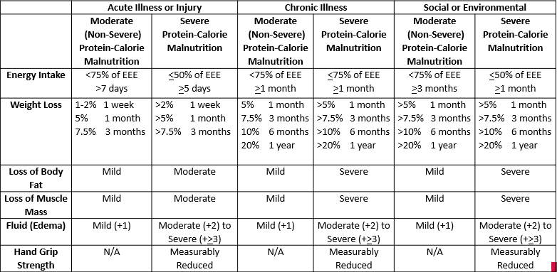
3.2 Screening & Malnutrition Labs
| Marker | Half-life | Affected by |
|---|---|---|
| Albumin | 3 weeks | Inflammation, stress, renal/liver disease, hydration status, meds (insulin, steroids, hormones) |
| Prealbumin | 3 days | Liver disease, renal disease, stress |
| Retinol binding protein | 12 hours | Liver/renal disease, fluid status |
| Transferrin | 8–10 days | Iron deficiency, inflammation |
Hypoalbuminemia will NOT improve with nutrition therapy alone as long as systemic inflammation persists — labs should be used to trend the response to nutrition support, not as a stand-alone diagnostic tool.
3.3 Enteral vs. Parenteral Nutrition IO 2 IO 3
Enteral nutrition feeds the GI tract via a tube, bypassing the mouth; parenteral nutrition feeds directly into a vein. The guiding principle: "if the gut works, use it" — enteral nutrition is more physiologic, lower risk, more cost-effective, and can meet 100% of needs, so parenteral is reserved for when enteral isn't an option (severe ileus/feeding intolerance, intestinal obstruction, hemodynamic instability, severe malabsorption, major GI bleed, or major GI surgery requiring gut rest).
| Access | Route / duration | Notes |
|---|---|---|
| Short-term enteral | NGT, NDT/NJT — <4–12 weeks | Gastric feeds (NGT) can be bolused; post-pyloric feeds (NDT/NJT) must run slowly via pump and should NOT be bolused |
| Long-term enteral | GT, JT, GJT — >4–12 weeks | Gastric (GT) is most physiologic and can be used for meds; post-pyloric (GJT) requires improved-tolerance pump feeding |
| PPN (peripheral) | Peripheral IV line, few days–2 weeks | Limited osmolarity/calories/protein/micronutrients; fat does not contribute to osmolarity |
| TPN (total) | Central access | Can provide full calories/protein/micronutrients |
Parenteral nutrition delivers dextrose, protein (amino acids), fat (lipids), vitamins/minerals, electrolytes, and water via IV. Before starting PN, correct hyperglycemia, electrolyte abnormalities, and severe fluid overload. Feeding schedules include bolus (mimics mealtimes), continuous (up to 24 hr/day), and cycled (e.g., 20 hr on/4 hr off, improving tolerance with time off the pump). Common causes of enteral feeding intolerance include sedation, narcotics, hypothermia, sepsis, gastroparesis, gastric outlet obstruction, ileus, recent surgery, and trauma.
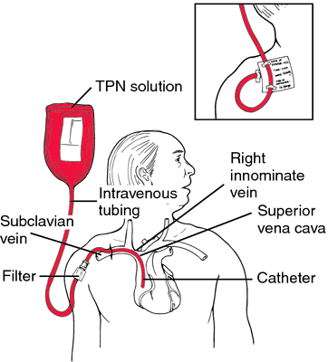
3.4 Refeeding Syndrome IO 4
Refeeding syndrome is a metabolic complication triggered when nutrition support is given to severely malnourished patients: the shift from catabolism to anabolism (dextrose → insulin) drives electrolytes into cells, causing hypophosphatemia, hypokalemia, and hypomagnesemia — potentially life-threatening arrhythmias can result. It can occur with PO, enteral, parenteral feeding, or even dextrose-containing IV fluids.
3.5 Nutrition in Common Medical Conditions IO 5
| Condition | Key nutrition points |
|---|---|
| Pressure wounds | Adequate calories; increased protein (more for severe wounds, watch renal function in older adults); adequate hydration; zinc, vitamin A, vitamin C (avoid vitamin A over-supplementation — toxicity risk) |
| Renal disease (CKD 3–5, pre-dialysis) | Reduce sodium, phosphorus, potassium, and protein; add fluid restriction at CKD 4–5; protein needs increase once on dialysis |
| Chronic liver disease | 5–7 small meals with a late-night snack; increase (don't restrict) protein — restriction doesn't improve hepatic encephalopathy and instead breaks down muscle, raising ammonia; favor plant/dairy over animal protein; reduce sodium to 1500–2000 mg/day if ascites present; PO is best, PEG/PEJ/GT carries higher risk from varices/ascites/bleeding |
| Diabetes | Favor complex over refined carbohydrates (slower digestion, avoids spikes); regular mealtimes; weight management; carb counting if insulin-dependent |
| Heart failure | Limit sodium and monitor fluid intake; favor unsaturated, plant-based fats to prevent cholesterol buildup; adequate calories/protein to preserve lean mass |
| Cancer (on treatment) | Avoid weight loss — adequate calories/protein, small frequent meals, manage nausea/mucositis/taste changes, PO supplements, enteral nutrition when needed |
| Trauma | Hypermetabolic state — start nutrition support early, increased calorie and high protein needs for wound healing and to prevent lean muscle loss; vitamin C, vitamin A, and zinc for wound healing |
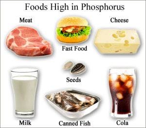
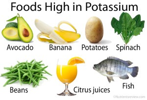
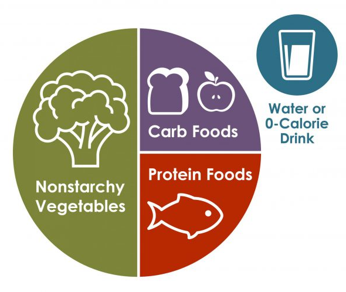
4 · Weight Control
Prof. Putnam
Instructional Objectives
- Describe energy balance and the uses of energy by the body.
- Discuss healthy body weight and composition, and risks posed by an abnormal BMI.
- Discuss characteristics of a sound weight-loss program, and the benefits/risks of weight-loss methods for severe obesity.
- Describe how reduced calorie intake, behavior modification, and physical activity fit into a weight-loss plan.
- Describe undernutrition in the United States and common pharmaceutical therapy for weight control.
4.1 Energy Balance & Its Components IO 1
Energy balance means energy intake (food and beverages) matches energy output (basal metabolism plus activity). Positive balance (intake > output) causes weight gain; negative balance (output > intake) causes weight loss. About 3,500 kcal ≈ 1 pound of weight loss. A bomb calorimeter measures the calorific value of food by measuring heat of combustion.
| Energy use category | % of total daily needs | Notes |
|---|---|---|
| Basal metabolism (BMR) | 60%–80% | Lean body mass (LBM) is the single most significant contributor — two people of equal weight can have very different LBM and thus different needs |
| Physical activity | 15%–30% | Includes exercise-induced thermogenesis (EAT) and NEAT (non-exercise activity thermogenesis — posture, ambulation, fidgeting) |
| Thermic effect of food (TEF) | 8%–15% | Highest for protein, then carbohydrate, then fat; e.g. at 3,000 kcal intake, TEF ≈ 150–300 kcal |
Adaptive thermogenesis is nonvoluntary heat production triggered by overeating or temperature change (fidgeting, shivering, muscle tone/posture maintenance), involving brown adipose tissue. Direct calorimetry measures body heat output via an insulated chamber (accurate but expensive/complex); indirect calorimetry estimates energy expenditure from O₂ intake and CO₂ output.
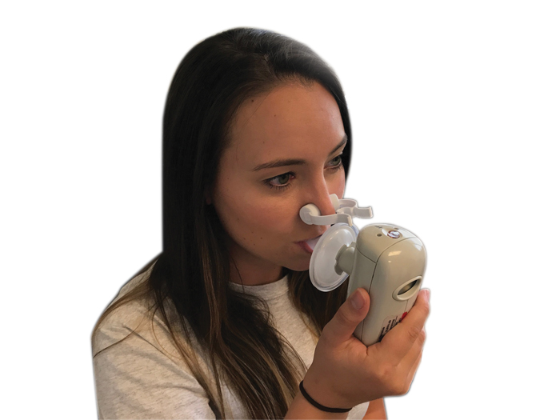
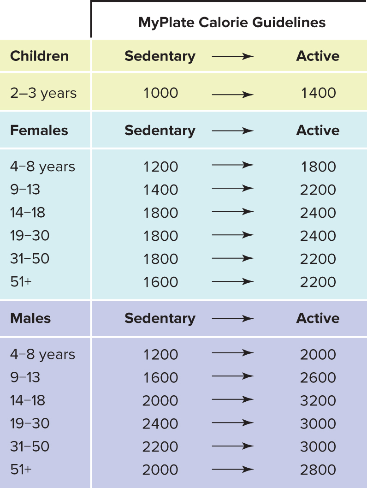
4.2 Healthy Body Weight & Composition IO 2
| BMI category | Range |
|---|---|
| Underweight (severe / moderate / mild thinness) | <18.50 (<16.00 / 16.00–16.99 / 17.00–18.49) |
| Normal | 18.50–24.99 |
| Overweight (pre-obese) | ≥25.00 (25.00–29.99) |
| Obese Class I / II / III | 30.00–34.99 / 35.00–39.99 / ≥40.00 |
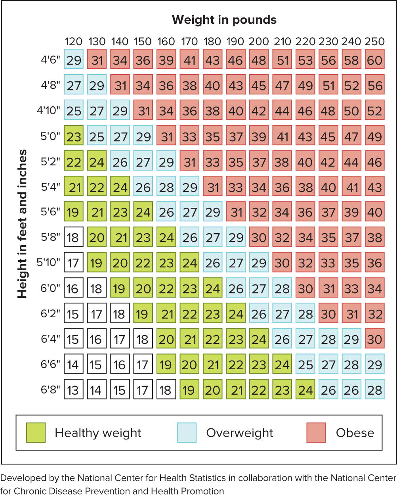
Indications weight isn't healthy: hypertension, elevated non-HDL cholesterol, family history of obesity/related disease, upper-body (android, "apple") fat distribution, and elevated blood glucose. Acceptable body fat: women 23%–31% (obese >35%), men 13%–21% (obese >25%). Body-composition measurement methods: densitometry (underwater weighing or Bod Pod® air displacement), skinfold calipers, bioelectrical impedance (electrical resistance), and DXA (X-ray scan — most accurate, but expensive, minimal radiation).
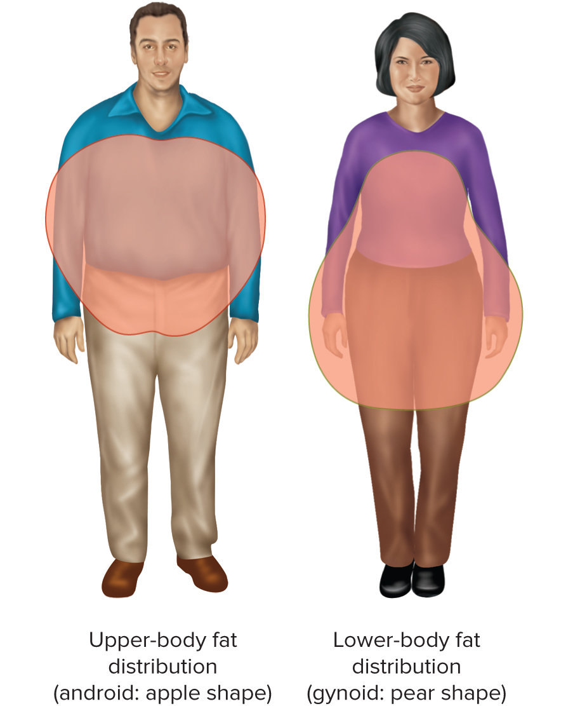
4.3 Causes of Obesity
Nature: identical twins have similar weights even raised apart, implicating genes affecting metabolic rate, fuel use, brain chemistry, and body weight (e.g., the "thrifty metabolism gene" theory — more fat stored to protect against famine). Set-point theory proposes a genetically predetermined, hypothalamus-regulated weight the body resists changing (reducing intake can lower metabolic rate); leptin assists regulation, and obese individuals may be leptin-resistant. Opponents note weight isn't constant and environment can alter it.
Nurture: eating habits are learned, physical activity patterns matter, and poverty is linked to obesity. Female obesity is often related to childhood obesity; male obesity tends to appear after age 30. Other contributing factors: age (less LBM, less activity), low BMR, childbearing weight retention, ethnicity/social acceptability, efficient fat storage, medications, menopause (increased abdominal fat), sedentary behavior, and socioeconomic/behavioral factors (binge eating, screen time, meals away from home).
4.4 Designing a Weight-Loss Plan IO 3 IO 4
Obesity is a chronic disease requiring sustainable lifestyle change, not short-term crash diets (the main reason weight is regained). A sound plan: 1–2 lb/week loss, a maintenance period after 10% body weight is lost before evaluating further loss, flexibility for normal social activities, a realistic dietary pattern (MyPlate-based, no "magic" foods), and behavior change with social support and relapse planning.
The weight-loss triad: restricting calories, adding physical activity, adding an appropriate behavioral component (ideally RDN-guided). Average need: women 1,800–2,400 kcal/day, men 2,400–3,200 kcal/day; a ~500 kcal/day deficit targets about 1 lb/week loss. A primarily plant-based, high-fiber pattern is most successful long-term. Satiety strategies: high-fiber/high-volume/water-rich foods, drinking water between meals, lean protein, and eating slowly (stomach-to-brain fullness signals can take up to 20 minutes).
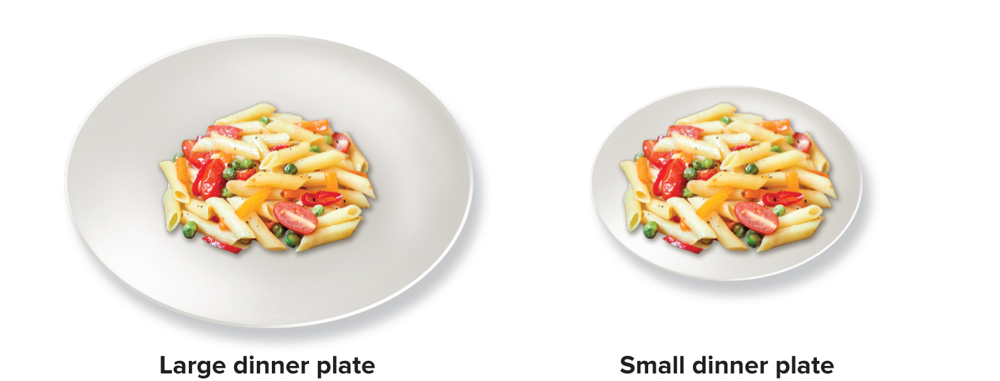
4.5 Medications, Surgery & Underweight IO 3 IO 5
| Medication | Mechanism |
|---|---|
| Orlistat (alli®, Xenical®) | Inhibits intestinal lipase, reducing fat digestion ~30% |
| Phentermine | Appetite suppressant |
| Liraglutide (Saxenda®) | Slows gastric emptying, enhances satiety |
| Semaglutide (Ozempic®, Wegovy®) / Contrave (bupropion + naltrexone) | GLP-1 agonism / combined appetite-and-reward pathway modulation |
Medication candidates: BMI ≥30, or ≥27 with an obesity-related comorbidity. A very-low-calorie diet (VLCD/protein-sparing modified fast) provides 400–800 kcal/day, often liquid, under strict medical supervision, for BMI ≥40 patients who've failed traditional approaches.
| Bariatric procedure | Key tradeoff |
|---|---|
| Gastric bypass | Greatest weight loss, but harder to reverse and higher nutrient-deficiency risk (reroutes intestine) |
| Vertical sleeve gastrectomy | Removes 80%–85% of stomach; cannot be reversed |
| Gastric plication | ~80% volume reduction via suturing; cannot be reversed; reflux/deficiency risk |
| Adjustable gastric banding | Lowest deficiency risk, reversible, but least weight loss and requires frequent follow-up |
| Ileal transposition | Best glycemic control; longest, most complex operation |
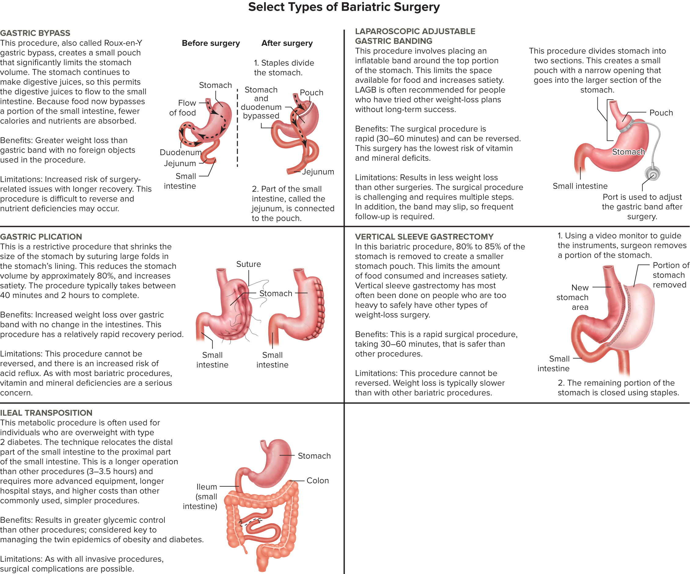
Bariatric surgery candidacy: BMI ≥40, or ≥35 with obesity-related comorbidity. Underweight is BMI <18.5 — a less-studied, less-precise cutoff than obesity, often needing calorie-dense foods, frequent meals, larger portions, reduced excessive activity, and strength training. In 2022, 44.2 million people lived in food-insecure US households; resources include WIC, Summer EBT, school lunch/breakfast programs, and the Child and Adult Care Food Program. Red flags for an unreliable "fad" diet: promises rapid weight loss, restricts food selections, relies on testimonials, claims to be a cure-all, recommends expensive supplements, and dismisses the need for exercise.
5 · Nutrition During Pregnancy & Breastfeeding
Racheal McInnis, DHSc, PA-C
Instructional Objectives
- Describe the unique nutritional needs of the pregnant woman.
- Identify nutritional deficiencies that may lead to a high-risk pregnancy.
- Describe the parameters used to determine optimal weight gain during pregnancy.
- Design an adequate, balanced meal plan for a pregnant or lactating woman using MyPlate as a basis.
- Identify the nutrients that may need to be supplemented during pregnancy and explain the reason for each.
- Describe the typical discomforts of pregnancy that can be minimized by dietary changes.
- Describe the physiological processes involved in breastfeeding, as well as advantages of breastfeeding for both the infant and mother.
- Describe appropriate patient education related to pregnancy and breastfeeding.
5.1 Preconception & Reproductive Nutrition IO 1 IO 2
Reproductive function itself costs calories — synthesizing reproductive hormones and sustaining normal menstrual cycles, pregnancy, and breastfeeding all draw on maternal energy stores. Because maternal nutritional status is a modifiable risk factor, maintaining a healthy weight and good nutrition before and during pregnancy can meaningfully optimize outcomes. General pregnancy recommendations: emphasize high-quality, nutrient-dense whole foods eaten in moderation, drink 8–12 cups (64–96 oz) of water daily unless contraindicated, take appropriate vitamin/mineral supplementation, and avoid alcohol, tobacco, and other harmful substances. A daily prenatal vitamin alongside a balanced diet supports fetal growth/development and normal maternal body function.
Two preconception conditions carry specific counseling points. Diabetes: glucose should be normalized before conception, because organogenesis occurs during weeks 3–8 of embryonic development (major organs forming), and maternal hyperglycemia during this critical window — excess glucose crosses the placenta and disrupts normal embryonic development — raises the risk of congenital malformations. Obesity: patients should be encouraged to reach a healthy weight before conception, since obesity in the preconception/pregnancy period is linked to decreased fertility, gestational diabetes, hypertensive disorders of pregnancy, cesarean delivery, postpartum weight retention, and increased long-term health risk for both mother and offspring.
Folic acid dosing depends on timing and history — per ACOG: 0.4 mg/day at least one month before pregnancy with no history of a neural tube defect; 4 mg/day at least one month before pregnancy for high-risk women with a history of a previous pregnancy affected by a neural tube defect; and 0.6 mg/day once pregnancy begins.
Infertility is defined as inability to conceive after 1 year of unprotected intercourse (occurring in 15% of those planning pregnancy), or after 6 months if the woman is 35 or older. Diets rich in fruits, vegetables, whole grains, legumes, healthy fats, and lean protein are associated with better reproductive health and fertility outcomes — the goal is to eat better, not more. Body fat extremes affect fertility on both ends: low body fat in females (BMI <18.5, from poverty/eating disorders/excessive exercise) lowers estradiol production, while excess body fat raises estrogen and triples infertility risk versus non-obese women (losing 5–10% body fat improves conception chances); low body fat in males decreases sex drive and sperm count.
5.2 Physiological Changes & Fetal Development IO 1 IO 2
Nutritional requirements increase throughout pregnancy, and that added energy should be high in nutrient density. Pregnant women typically rest more (conserving energy and promoting fetal nutrition), and while early "morning sickness" can reduce appetite, overall appetite is usually increased. Cravings are common during pregnancy, with no evidence linking them to nutritional deficiencies; pica is craving non-food substances (clay, starch, ice) and is more concerning in large amounts, possibly associated with iron deficiency; aversions (strong dislikes, e.g. eggs, coffee, onions) are also common.
Fetal development moves through vulnerable periods with a finite window for cells to become a given tissue/organ. The first trimester is the most critical period for potential problems (organogenesis occurs during this time), making nutritional quality most important then. The second trimester can still be affected by toxins, though less easily. The third trimester is crucial for fetal growth (length doubles, weight increases) and is a critical time for iron, since the fetus takes priority for iron stores.
| Trimester of famine exposure (Dutch Famine, 1944–45) | Increased adult health risks observed |
|---|---|
| First trimester | Glucose intolerance, atherogenic blood lipid profile, coronary heart disease, stress sensitivity, obesity, breast cancer |
| Second trimester | Glucose intolerance, kidney disease, obstructive lung disease |
| Third trimester | Glucose intolerance |
Precise terminology matters clinically: pre-term = delivered before 37 weeks; a term infant is early term (37–38 wk), full term (39–40 wk), or late term (41 wk); post-term = delivered after 42 weeks. Low birth weight is <2,500 g (<5.5 lb); small for gestational age (SGA) is fetal weight <10th percentile for gestational age; macrosomic/large for gestational age (LGA) is fetal weight >90th percentile at any gestational age. Maternal obesity raises risk of maternal hypertension, gestational diabetes, cesarean delivery, fetal neural tube defects, macrosomia, low Apgar scores, and childhood obesity, while maternal dietary restrictions increase risk for poor fetal development and low fetal birth weight — both overnutrition and undernutrition carry real, distinct fetal risks.
5.3 Macronutrient & Micronutrient Needs IO 1 IO 5
| Macronutrient | Pregnancy recommendation | Notes |
|---|---|---|
| Protein | 1.1 g/kg/day (≈71 g/day); ≈20% of daily kcal | Meets demands of growing fetus, placenta, uterus, breasts, and expanded maternal blood volume; routine supplementation not recommended; many animal protein sources are high-fat and may contribute to excess weight gain |
| Fat | 20–35% of daily kcal | <10% from saturated fat; emphasize polyunsaturated omega-6/omega-3 sources (flaxseed, walnuts, salmon); plasma cholesterol rises ≈50% and triglycerides may triple in the second half of pregnancy, both falling again post-delivery |
| Carbohydrate | Minimum 175 g/day; ≈50% of daily kcal | Emphasize fruit, milk, whole grains, beans/peas, vegetables; limit refined grains/added sugar/candy/syrup/soda; fiber target 28 g/day |
| Micronutrient | RDA in pregnancy | Key point | Food sources |
|---|---|---|---|
| Iron | 27 mg/day | Fetal/placental development and maternal RBC volume expansion | Lean red meat, poultry, fish, plant foods, fortified grains |
| Folic acid | 0.6 mg/day during pregnancy | Neural tube defect prevention (see preconception dosing above) | Green leafy vegetables, fortified grains |
| Omega-3 fatty acids | 200–300 mg/day | DHA and EPA (fish oil) plus ALA (plant-based); supports fetal brain/eye development, lower preterm-birth risk | 2–3 servings/week of low-mercury seafood (salmon, trout, sardines, herring, light tuna); walnuts, flaxseed, chia seeds |
| Calcium | 1,000 mg/day (1,300 mg/day if 14–18 yo) | — | Ready-to-eat cereals, milk, cheese, cornmeal, yogurt, wheat flour, collards, rhubarb, sardines, soybeans, turnip greens |
| Vitamin D | 600 IU/day | — | Synthesized by UV light; egg yolks, fatty fish (salmon, sardines) |
| Zinc | 11 mg/day (>19 yo) / 12 mg/day (14–18 yo) | Deficiency → growth restriction | Cereals, baked beans, turkey, beef, chicken |
| Iodine | 220 mcg/day | Deficiency → fetal goiter, developmental delay; most prenatal vitamins contain little/none | Iodized table salt, dairy products, seafood, meat, eggs |
| Choline | 450 mg/day | Fetal CNS development; most prenatal vitamins contain little/none | Eggs, meats, poultry, seafood, dairy |
| Vitamin B12 | 2.6 mcg/day (2.8 mcg lactating) | DNA synthesis, cellular metabolism; vegetarian/vegan diets at higher deficiency risk | Fish, meat, poultry, eggs, dairy products |
| Vitamin A | 770 mcg/day | Cell division, fetal growth, immune system, vision — but excess intake is teratogenic; avoid excess supplements and avoid liver (especially first trimester) | Carrots, green leafy vegetables, sweet potatoes, fish, eggs |
| Vitamin C | 85 mg/day | Antioxidant function; supplementation hasn't been shown to improve outcomes | Citrus fruits, strawberries, kiwi, tomatoes, bell peppers |
| Vitamin E | 15 mg/day | Antioxidant function; supplementation hasn't been shown to improve outcomes | Nuts, seeds, vegetable oils, spinach, avocado |
Micronutrient deficiency risk is higher in multiple-gestation pregnancies, heavy smokers, adolescents, substance abusers, those with a bariatric surgery history, malabsorption conditions (Crohn disease, bowel resection), and vegans. A vegetarian diet can be healthy in pregnancy if well-balanced, with particular attention to calcium, vitamin B12, and iron.
| Diet type | What's included |
|---|---|
| Semi-vegetarian | Vegetarian base with occasional meat, fish, or chicken |
| Pescatarian | Fish on occasion; eggs, milk, and milk products; no other animal meats |
| Lacto-ovovegetarian | Eggs, milk, and milk products included; no meat |
| Lactovegetarian | Milk and milk products included; no eggs or meat |
| Macrobiotic | Whole grains, vegetables, fruits, legumes, seaweeds; white meat/white-meat fish limited to 1–2×/week |
| Vegan | All animal products excluded, including eggs and dairy |
| Fruitarian | Based on fruits, nuts, seeds, and botanical fruits (avocado, tomato); all other vegetables, grains, beans, and animal products excluded |
5.4 Meal Planning, Weight Gain & Assessment IO 3 IO 4
Caloric needs rise by trimester, not a flat "eating for two": no additional calories in the first trimester, +340 kcal/day in the second, and +450 kcal/day in the third. To meet the resulting 2,200–2,900 kcal/day range, target daily servings are about 2–2.5 cups fruit, 3–3.5 cups vegetables, 6–10 oz grains, 6–7 oz protein, and 3 cups dairy — the number of servings needed from each of the five MyPlate food groups is calculated from height, prepregnancy weight, due date, and exercise level.
Weight gain guidelines: about 1–5 lb total in the first trimester, then roughly 1 lb/week through the second and third trimesters.

Assessment of nutritional status draws on history and physical exam. History: obstetric history (prior neural tube defect, iron deficiency anemia), social history (cigarette/alcohol/illicit drug/stimulant use), surgical history (bariatric surgery → micronutrient deficiency and dumping syndrome risk), and dietary habits (questionnaires help surface skipped meals, restrictive/special diets, high-sugar beverages, low calcium/produce intake). Physical exam: BMI calculated from height and prepregnancy weight (using last-menstrual-period weight as the baseline), plus signs of nutritional deficiency and eating disorders (bulimia — enlarged parotid glands, eroded tooth enamel; anorexia — bradycardia, dry skin), oral health, and skin/nails.
5.5 Food Safety, Discomforts & Patient Education IO 5 IO 6 IO 8
Food safety counseling: avoid foodborne infections (brucellosis, listeria, toxoplasmosis) via good hand hygiene, fully cooked meat/fish/poultry/eggs, avoiding unpasteurized dairy/juice, rinsing produce under running water for 30 seconds, avoiding raw sprouts (bacteria is difficult to wash off), and sanitizing countertops. Fish: avoid raw/undercooked seafood and high-mercury species (shark, swordfish, king mackerel, marlin, orange roughy, tilefish, bigeye tuna); aim for 2–3 servings/week (4 oz each) of lower-mercury choices instead. Caffeine: ACOG recommends limiting to <200 mg/day, and states that moderate intake at that level doesn't appear to meaningfully contribute to miscarriage or preterm birth. Herbal supplements have few RCTs establishing pregnancy safety; available data suggests possible miscarriage, preterm birth, induced uterine contractions, or fetal injury — particular concern around blue cohosh, black cohosh, dong quai, golden seal, and feverfew.
Guidelines for successful outcomes (term pregnancy >37 weeks, birth weight >5.5 lb): prenatal care/counseling is the primary determinant of success. Maternal age at the extremes raises risk — adolescents (<20 yo): preeclampsia-eclampsia, prematurity, SGA infants; advanced maternal age (>35 yo): eclampsia, diabetes, obesity, fetal aneuploidy. Closely spaced births raise premature-infant risk, so an 18-month interpregnancy interval (end of one pregnancy to start of the next) is recommended, alongside avoiding smoking, unprescribed medications, and drug/alcohol use. WIC (Special Supplemental Nutrition Program for Women, Infants, and Children) is federal grant money administered by states, providing supplemental foods, health care referrals, and nutrition education to low-income pregnant/breastfeeding/postpartum women and at-risk children up to age 5.
Refer to a registered dietitian with maternal-nutrition training for: diabetes, hypertension, metabolic disorders, or GI disorders; history of bariatric or other absorption-affecting GI surgery; overweight/obese patients; eating disorders (which may worsen during pregnancy); multiple gestation; or substance abuse.
5.6 Physiology & Nutrition of Breastfeeding IO 7
Two hormones drive lactation: prolactin promotes breastmilk production, and oxytocin promotes breastmilk ejection/release — the "let-down" reflex.
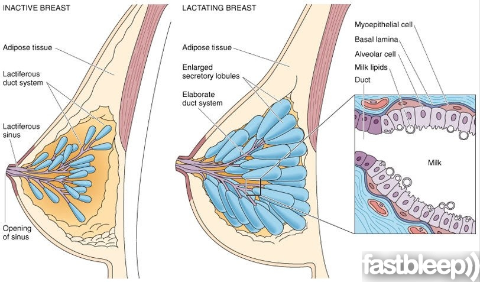
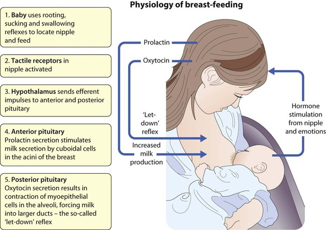
The American Academy of Pediatrics (AAP) and World Health Organization (WHO) recommend exclusive breastfeeding until at least 6 months of age. Human milk is a unique, species-specific, complex nutritive fluid with both immunologic and growth-promoting properties, and its composition changes over time as the infant matures.

Colostrum (the first premilk secretion, produced the first few days after birth) is thick and yellowish, rich in immunoglobulins and immune cells, and contains human milk oligosaccharides (HMOs) that promote beneficial gut bacteria (particularly Bifidobacteria); it also has a laxative effect that helps pass newborn meconium. Transitional milk follows, roughly 2–5 days to 10–14 days after birth, and is more voluminous than colostrum. Mature milk is established by about 2 weeks postpartum; it's roughly 87% water, and of its immunoglobulins (M, A, D, G, E), IgA is most abundant (about 90%), playing a crucial role protecting mucosal surfaces (GI, respiratory). Within a single feeding, foremilk (released in the first 3–5 minutes) resembles skim milk and is more watery, while hindmilk (released after 10–20 minutes) resembles cream.
A well-nourished breastfed infant may take 2–3 weeks to establish a routine; once established, look for at least 6 wet diapers/day, normal weight gain, lumpy mustard-colored stool, and softening of breast tissue during feeding (a sign milk is actually being consumed). Introduce a bottle only after breastfeeding is well established.
Breastfeeding nutrition needs increase further above pregnancy: caloric need rises by 500 kcal/day, protein to 70 g/day, calcium to 1,000 mg/day, folic acid to 500 mcg/day, vitamin C to 120 mg/day, and water to roughly 3–4 liters/day — snacking between meals (hard-boiled eggs, cottage cheese, protein bars, Greek yogurt, almonds) helps meet the added caloric demand.
Barriers to breastfeeding include misinformation, return to an outside job, and social concerns; certain medications, untreated active tuberculosis, and some infectious diseases may limit or contraindicate it. Breast surgery doesn't automatically preclude breastfeeding: research on silicone implants has found no reported clinical problems in infants, and AAP has stated there's insufficient evidence to classify implants as a contraindication; augmentation/lift/reduction can still affect nerves and ducts (implants placed below the muscle affect supply less than above-muscle placement; areola-detaching techniques carry more risk to supply); and mastectomy for breast cancer treatment may reduce breastfeeding capability, with varied individual social/psychological experience. Finally, cow's milk should not be used in infant feeding before 12 months — it's too high in minerals/protein and too low in carbohydrate, and its protein is harder to digest, raising allergy concerns.
6 · Nutrition Allergies & Intolerances
Prof. Putnam
Instructional Objectives
- Differentiate food allergy and food sensitivity.
- Describe common types of food allergies and food sensitivities.
- Discuss food allergy and food sensitivity as it relates to pharmaceutical therapies.
- Summarize the approach to food allergy and food sensitivity diagnosis.
- Review the clinical presentation, diagnosis, and management for gluten intolerance.
- Review the clinical presentation, diagnosis, and management for lactose intolerance.
- Review the clinical presentation, diagnosis, and management for nut allergies.
- Describe patient education for food allergies and food sensitivities.
6.1 Food Allergy vs. Food Intolerance IO 1 IO 2
A food allergy is an adverse reaction to food that involves an immune response; a food intolerance is an adverse reaction to food that does not involve an allergic (immune) reaction — the distinction is mechanism, not just severity. Food allergies split into two patterns: IgE-mediated (early onset) reactions present soon after ingestion and are often more violent, up to and including anaphylaxis; non-IgE-mediated (late onset) reactions present later and are more subtle.
| Body system | Symptoms |
|---|---|
| Skin | Itching, tingling*, redness, hives, swelling |
| GI tract | Nausea, vomiting, diarrhea, gas, bloating, pain, constipation, indigestion |
| Respiratory tract | Runny nose, wheezing, congestion, difficulty breathing* |
| Cardiovascular system | Low blood pressure* and rapid heart rate* |
Early-onset (IgE) reactions specifically include wheezing, urticaria, angioedema, rashes, vomiting, and anaphylaxis; late-onset (non-IgE) reactions include diarrhea, abdominal pain, allergic rhinitis, atopic eczema, constipation, and food-sensitive colitis. The most common allergenic foods: peanuts, tree nuts, milk, eggs, seeds, fin fish, shellfish, wheat, soy, certain fruits (apples, peaches, plums, cherries, banana, citrus), and select herbs/spices (coriander, paprika, mustard).
6.2 Diagnosing Food Allergies IO 4
| Diagnostic step | What it involves |
|---|---|
| History | Description of symptoms, time from ingestion to symptom onset, symptom duration, most recent allergic episode, quantity of food required to trigger a reaction, suspected foods, and allergic disease in other family members |
| Physical examination | Look for signs of an allergic reaction — rash, itching, intestinal bloating, etc. |
| Elimination diet | Remove the suspected allergen for 1–2 weeks or until symptoms clear; start with low-allergy foods (rice, vegetables, fresh meats) |
| Food challenge | Add back small amounts of excluded foods, one at a time — only if anaphylaxis is not a possible consequence |
| Blood test | Determine presence of antibodies in blood that bind to the food antigens tested |
| Skin test | Place a sample of the suspected allergen under the skin and watch for an inflammatory reaction |
The elimination diet is typically the practical first step: start with low-allergy foods, and once symptoms resolve, reintroduce foods one at a time to identify the trigger — but only when anaphylaxis isn't a realistic risk of that reintroduction.
6.3 GI Conditions & Nutrition Management IO 2 IO 3
Heartburn (acid reflux) affects about half of North American adults occasionally, resulting from stomach acid backing up into the esophagus and eroding its lining (pain, nausea, gagging, cough, hoarseness); its recurrent, serious form is GERD. Peptic ulcers (erosion of the esophagus, stomach, or upper small intestine lining) are commonly caused by stomach acid itself, H. pylori infection, or NSAID overuse, and are treated with antibiotics (to eradicate H. pylori) and acid-blocking medications.
| Drug class | Mechanism | Examples |
|---|---|---|
| Proton pump inhibitors (PPIs) | Inhibit gastric cells' ability to secrete hydrogen ions, reducing acid production | Omeprazole, lansoprazole, rabeprazole, esomeprazole |
| H2 blockers | Impede histamine's stimulating effect on acid-producing stomach cells | Cimetidine, ranitidine, nizatidine, famotidine |
Nutrition recommendations for heartburn/ulcers: maintain a healthy weight, eat small low-fat meals, limit caffeine, and avoid symptom triggers (acidic foods like orange juice/tomato products, highly spiced foods, carbonated beverages, onions and garlic).
Irritable bowel syndrome (IBS) affects 10–15% of adults, with bloating, abdominal pain, diarrhea/constipation (or alternating episodes), and visible abdominal distention. Treatment: eliminate trigger foods (poorly digested carbohydrates), follow a low-FODMAP dietary pattern, moderate caffeine, eat small frequent low-fat meals, and reduce stress/treat depression. FODMAPs are fermentable oligosaccharides, disaccharides, monosaccharides, and polyols that may be poorly digested and drive bloating/gas/diarrhea; the low-FODMAP pattern eliminates high-FODMAP foods (wheat, onions, legumes, dairy) for several weeks, then gradually reintroduces them to determine individual tolerance.
6.4 Celiac Disease & Gluten Sensitivity IO 5
Celiac disease is a chronic, immune-mediated disease precipitated by exposure to the dietary protein gluten (found in wheat, rye, and barley) in genetically predisposed people. It affects approximately 1% of the US population, flattens intestinal villi, and limits nutrient absorption. Treatment is elimination of wheat, rye, and barley.
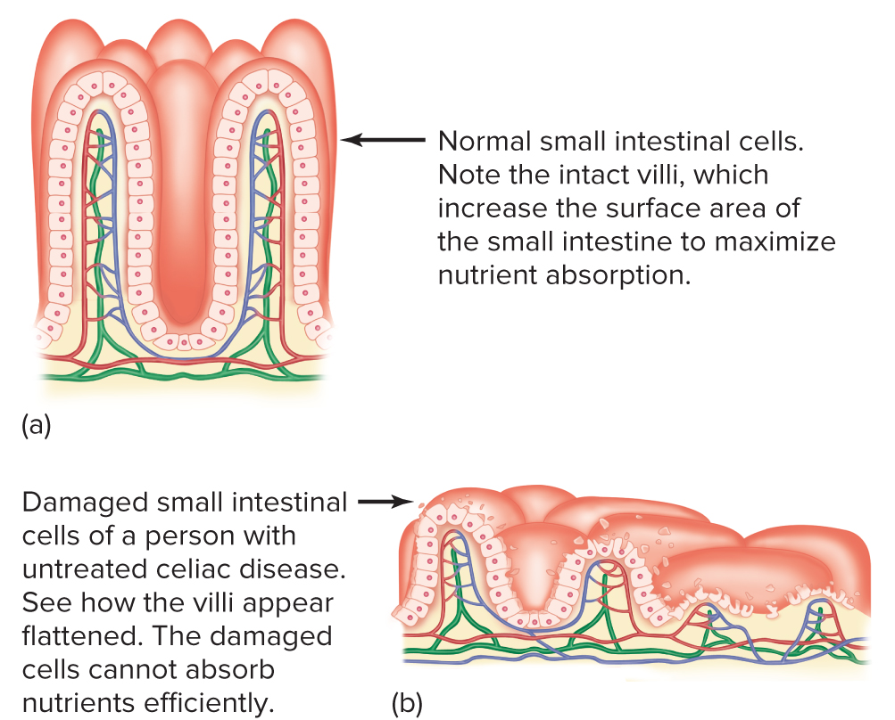
Nonceliac gluten sensitivity (also called gluten intolerance) produces symptoms after gluten ingestion — GI distress, fatigue, weakness, headache, muscle/joint pain, sleep disorders — but without the intestinal villi damage seen in celiac disease. Despite that mechanistic difference, treatment is the same: elimination of wheat, rye, and barley.
6.5 Epidemiology, Prevention & Patient Education IO 6 IO 7 IO 8
Food allergies are on the rise: childhood food allergies increased 50% from 1997 to 2011, now causing about 92,000 childhood ER visits and 84 child fatalities per year, and costing Americans $25 billion annually. Two proposed causes: early introduction of solid foods before 4 months of age (an infant's immature, "leaky" GI tract allows undigested proteins into the bloodstream), and the hygiene hypothesis — a "germophobic" society (antibiotics, hand sanitizers, antimicrobial cleaners) under-challenges the immune system with antigens, which may become sensitized to otherwise-innocuous food proteins instead.
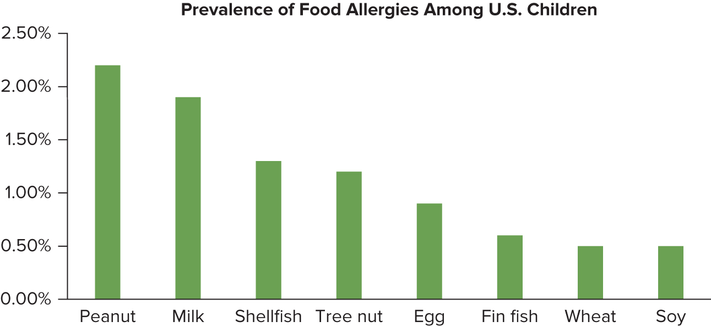
Living with food allergies: small amounts may be tolerated, cooking food may eliminate the allergic response, and avoidance is usually the best approach; about 80% of young children outgrow food allergies before age 3, and antibiotic/vaccine treatments are being tested. The 2006 Food Allergen Labeling and Consumer Protection Act mandates that manufacturers clearly identify the presence of the major food allergens — milk, eggs, fish, shellfish, peanuts, tree nuts, wheat, and soy — on food product labels.
Beyond true allergies, food intolerances can come from several distinct sources: natural constituents of certain foods (red wine, tomatoes, pineapple), synthetic compounds added to foods (sulfites, food-coloring agents, MSG), food contaminants (antibiotics/chemicals in livestock or crops, insect parts, toxic contaminants like Clostridium botulinum), and deficiencies in digestive enzymes (e.g. lactase, underlying lactose intolerance).